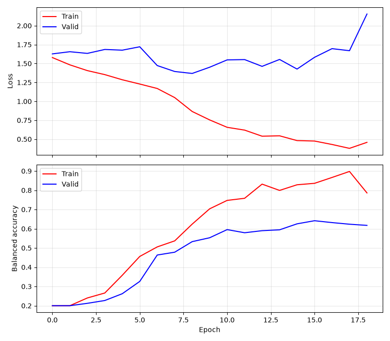
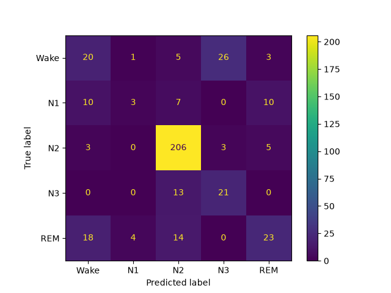
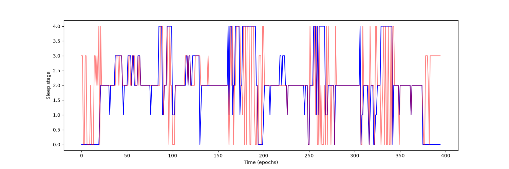

Note
Go to the end to download the full example code.
Sleep staging on the Sleep Physionet dataset using Chambon2018 network#
This tutorial shows how to train and test a sleep staging neural network with Braindecode. We adapt the time distributed approach of [1] to learn on sequences of EEG windows using the openly accessible Sleep Physionet dataset [2] [3].
# Authors: Hubert Banville <hubert.jbanville@gmail.com>
#
# License: BSD (3-clause)
Loading and preprocessing the dataset#
Loading#
First, we load the data using the
braindecode.datasets.sleep_physionet.SleepPhysionet class. We load
two recordings from two different individuals: we will use the first one to
train our network and the second one to evaluate performance (as in the MNE
sleep staging example).
from numbers import Integral
from braindecode.datasets import SleepPhysionet
subject_ids = [0, 1]
dataset = SleepPhysionet(subject_ids=subject_ids, recording_ids=[2], crop_wake_mins=30)
Downloading data from 'https://physionet.org/physiobank/database/sleep-edfx/sleep-cassette//SC4002E0-PSG.edf' to file '/home/runner/mne_data/physionet-sleep-data/SC4002E0-PSG.edf'.
0%| | 0.00/51.6M [00:00<?, ?B/s]
0%| | 42.0k/51.6M [00:00<02:11, 392kB/s]
0%| | 108k/51.6M [00:00<01:35, 540kB/s]
0%|▏ | 198k/51.6M [00:00<01:19, 644kB/s]
1%|▏ | 262k/51.6M [00:00<01:27, 586kB/s]
1%|▏ | 322k/51.6M [00:00<01:49, 469kB/s]
1%|▎ | 372k/51.6M [00:00<02:13, 385kB/s]
1%|▎ | 419k/51.6M [00:00<02:17, 373kB/s]
1%|▎ | 468k/51.6M [00:01<02:17, 373kB/s]
1%|▍ | 525k/51.6M [00:01<02:07, 399kB/s]
1%|▍ | 567k/51.6M [00:01<02:09, 394kB/s]
1%|▍ | 624k/51.6M [00:01<01:57, 435kB/s]
1%|▌ | 681k/51.6M [00:01<01:48, 472kB/s]
1%|▌ | 730k/51.6M [00:01<01:59, 425kB/s]
2%|▌ | 796k/51.6M [00:01<01:49, 466kB/s]
2%|▋ | 861k/51.6M [00:01<01:41, 500kB/s]
2%|▋ | 927k/51.6M [00:02<01:37, 523kB/s]
2%|▋ | 992k/51.6M [00:02<01:37, 519kB/s]
2%|▊ | 1.06M/51.6M [00:02<01:38, 515kB/s]
2%|▊ | 1.12M/51.6M [00:02<01:32, 548kB/s]
2%|▉ | 1.21M/51.6M [00:02<01:25, 587kB/s]
2%|▉ | 1.29M/51.6M [00:02<01:22, 607kB/s]
3%|█ | 1.38M/51.6M [00:02<01:17, 652kB/s]
3%|█ | 1.44M/51.6M [00:02<01:18, 637kB/s]
3%|█ | 1.51M/51.6M [00:02<01:18, 639kB/s]
3%|█▏ | 1.57M/51.6M [00:03<01:19, 627kB/s]
3%|█▏ | 1.64M/51.6M [00:03<01:30, 555kB/s]
3%|█▎ | 1.71M/51.6M [00:03<01:22, 605kB/s]
3%|█▎ | 1.78M/51.6M [00:03<01:29, 555kB/s]
4%|█▎ | 1.84M/51.6M [00:03<01:26, 577kB/s]
4%|█▍ | 1.90M/51.6M [00:03<01:26, 573kB/s]
4%|█▍ | 1.97M/51.6M [00:03<01:31, 544kB/s]
4%|█▍ | 2.03M/51.6M [00:03<01:31, 543kB/s]
4%|█▌ | 2.10M/51.6M [00:04<01:30, 545kB/s]
4%|█▌ | 2.16M/51.6M [00:04<01:28, 556kB/s]
4%|█▋ | 2.23M/51.6M [00:04<01:25, 578kB/s]
4%|█▋ | 2.29M/51.6M [00:04<01:27, 567kB/s]
5%|█▋ | 2.37M/51.6M [00:04<01:22, 600kB/s]
5%|█▊ | 2.43M/51.6M [00:04<01:21, 605kB/s]
5%|█▊ | 2.50M/51.6M [00:04<01:29, 548kB/s]
5%|█▉ | 2.59M/51.6M [00:04<01:20, 611kB/s]
5%|█▉ | 2.66M/51.6M [00:04<01:22, 592kB/s]
5%|██ | 2.72M/51.6M [00:05<01:23, 586kB/s]
5%|██ | 2.79M/51.6M [00:05<01:22, 594kB/s]
6%|██ | 2.85M/51.6M [00:05<01:22, 592kB/s]
6%|██▏ | 2.91M/51.6M [00:05<01:33, 521kB/s]
6%|██▏ | 2.97M/51.6M [00:05<01:36, 505kB/s]
6%|██▏ | 3.02M/51.6M [00:05<01:36, 506kB/s]
6%|██▎ | 3.08M/51.6M [00:05<01:39, 489kB/s]
6%|██▎ | 3.14M/51.6M [00:05<01:38, 492kB/s]
6%|██▎ | 3.20M/51.6M [00:06<01:36, 501kB/s]
6%|██▍ | 3.27M/51.6M [00:06<01:33, 517kB/s]
6%|██▍ | 3.34M/51.6M [00:06<01:31, 529kB/s]
7%|██▌ | 3.40M/51.6M [00:06<01:31, 530kB/s]
7%|██▌ | 3.47M/51.6M [00:06<01:26, 555kB/s]
7%|██▌ | 3.53M/51.6M [00:06<01:25, 564kB/s]
7%|██▋ | 3.59M/51.6M [00:06<01:25, 559kB/s]
7%|██▋ | 3.65M/51.6M [00:06<01:32, 520kB/s]
7%|██▋ | 3.70M/51.6M [00:07<01:45, 453kB/s]
7%|██▊ | 3.75M/51.6M [00:07<01:54, 418kB/s]
7%|██▊ | 3.80M/51.6M [00:07<01:55, 414kB/s]
7%|██▊ | 3.85M/51.6M [00:07<01:59, 399kB/s]
8%|██▊ | 3.89M/51.6M [00:07<02:04, 384kB/s]
8%|██▉ | 3.94M/51.6M [00:07<02:14, 355kB/s]
8%|██▉ | 4.00M/51.6M [00:07<02:02, 388kB/s]
8%|██▉ | 4.04M/51.6M [00:07<02:14, 353kB/s]
8%|███ | 4.09M/51.6M [00:08<02:31, 313kB/s]
8%|███ | 4.13M/51.6M [00:08<02:33, 309kB/s]
8%|███ | 4.17M/51.6M [00:08<02:51, 276kB/s]
8%|███ | 4.20M/51.6M [00:08<03:18, 239kB/s]
8%|███ | 4.24M/51.6M [00:08<03:32, 223kB/s]
8%|███▏ | 4.27M/51.6M [00:09<03:42, 213kB/s]
8%|███▏ | 4.30M/51.6M [00:09<03:34, 220kB/s]
8%|███▏ | 4.33M/51.6M [00:09<03:29, 226kB/s]
8%|███▏ | 4.37M/51.6M [00:09<03:12, 246kB/s]
9%|███▎ | 4.42M/51.6M [00:09<02:51, 275kB/s]
9%|███▎ | 4.47M/51.6M [00:09<02:31, 310kB/s]
9%|███▎ | 4.52M/51.6M [00:09<02:14, 350kB/s]
9%|███▎ | 4.56M/51.6M [00:09<02:12, 356kB/s]
9%|███▍ | 4.61M/51.6M [00:10<02:01, 386kB/s]
9%|███▍ | 4.68M/51.6M [00:10<01:49, 428kB/s]
9%|███▍ | 4.74M/51.6M [00:10<01:41, 462kB/s]
9%|███▌ | 4.81M/51.6M [00:10<01:35, 491kB/s]
9%|███▌ | 4.88M/51.6M [00:10<01:32, 506kB/s]
10%|███▋ | 4.94M/51.6M [00:10<01:30, 513kB/s]
10%|███▋ | 4.99M/51.6M [00:10<01:35, 486kB/s]
10%|███▋ | 5.04M/51.6M [00:10<01:36, 483kB/s]
10%|███▋ | 5.09M/51.6M [00:11<01:58, 392kB/s]
10%|███▊ | 5.14M/51.6M [00:11<02:02, 381kB/s]
10%|███▊ | 5.19M/51.6M [00:11<02:00, 387kB/s]
10%|███▊ | 5.24M/51.6M [00:11<01:53, 407kB/s]
10%|███▉ | 5.28M/51.6M [00:11<01:49, 423kB/s]
10%|███▉ | 5.34M/51.6M [00:11<01:41, 456kB/s]
10%|███▉ | 5.39M/51.6M [00:11<01:40, 459kB/s]
11%|████ | 5.44M/51.6M [00:11<01:41, 457kB/s]
11%|████ | 5.50M/51.6M [00:11<01:37, 471kB/s]
11%|████ | 5.55M/51.6M [00:12<01:44, 441kB/s]
11%|████▏ | 5.61M/51.6M [00:12<01:35, 481kB/s]
11%|████▏ | 5.67M/51.6M [00:12<01:34, 486kB/s]
11%|████▏ | 5.74M/51.6M [00:12<01:33, 491kB/s]
11%|████▎ | 5.80M/51.6M [00:12<01:32, 496kB/s]
11%|████▎ | 5.87M/51.6M [00:12<01:31, 501kB/s]
11%|████▎ | 5.93M/51.6M [00:12<01:30, 504kB/s]
12%|████▍ | 5.98M/51.6M [00:12<01:38, 465kB/s]
12%|████▍ | 6.04M/51.6M [00:13<01:35, 476kB/s]
12%|████▍ | 6.09M/51.6M [00:13<01:36, 472kB/s]
12%|████▌ | 6.14M/51.6M [00:13<01:38, 462kB/s]
12%|████▌ | 6.20M/51.6M [00:13<01:33, 485kB/s]
12%|████▌ | 6.26M/51.6M [00:13<01:29, 507kB/s]
12%|████▋ | 6.33M/51.6M [00:13<01:29, 503kB/s]
12%|████▋ | 6.39M/51.6M [00:13<01:25, 530kB/s]
13%|████▊ | 6.46M/51.6M [00:13<01:44, 430kB/s]
13%|████▊ | 6.55M/51.6M [00:14<01:31, 493kB/s]
13%|████▊ | 6.61M/51.6M [00:14<01:31, 494kB/s]
13%|████▉ | 6.68M/51.6M [00:14<01:30, 499kB/s]
13%|████▉ | 6.75M/51.6M [00:14<01:24, 532kB/s]
13%|█████ | 6.82M/51.6M [00:14<01:23, 538kB/s]
13%|█████ | 6.88M/51.6M [00:14<01:22, 541kB/s]
13%|█████ | 6.95M/51.6M [00:14<01:21, 547kB/s]
14%|█████▏ | 7.00M/51.6M [00:14<01:28, 506kB/s]
14%|█████▏ | 7.05M/51.6M [00:15<01:28, 506kB/s]
14%|█████▏ | 7.11M/51.6M [00:15<01:29, 499kB/s]
14%|█████▎ | 7.17M/51.6M [00:15<01:30, 492kB/s]
14%|█████▎ | 7.23M/51.6M [00:15<01:28, 501kB/s]
14%|█████▎ | 7.30M/51.6M [00:15<01:26, 510kB/s]
14%|█████▍ | 7.35M/51.6M [00:15<01:27, 508kB/s]
14%|█████▍ | 7.41M/51.6M [00:15<01:25, 517kB/s]
14%|█████▌ | 7.48M/51.6M [00:15<01:41, 436kB/s]
15%|█████▌ | 7.56M/51.6M [00:16<01:28, 498kB/s]
15%|█████▌ | 7.61M/51.6M [00:16<01:37, 450kB/s]
15%|█████▋ | 7.67M/51.6M [00:16<01:41, 431kB/s]
15%|█████▋ | 7.71M/51.6M [00:16<01:50, 397kB/s]
15%|█████▋ | 7.75M/51.6M [00:16<01:58, 370kB/s]
15%|█████▋ | 7.80M/51.6M [00:16<01:57, 372kB/s]
15%|█████▊ | 7.84M/51.6M [00:16<01:57, 373kB/s]
15%|█████▊ | 7.88M/51.6M [00:17<02:28, 295kB/s]
15%|█████▊ | 7.91M/51.6M [00:17<02:39, 273kB/s]
15%|█████▊ | 7.94M/51.6M [00:17<02:43, 268kB/s]
15%|█████▊ | 7.97M/51.6M [00:17<02:35, 281kB/s]
16%|█████▉ | 8.02M/51.6M [00:17<02:25, 299kB/s]
16%|█████▉ | 8.07M/51.6M [00:17<02:14, 324kB/s]
16%|█████▉ | 8.12M/51.6M [00:17<02:02, 355kB/s]
16%|██████ | 8.17M/51.6M [00:17<01:56, 374kB/s]
16%|██████ | 8.23M/51.6M [00:18<01:45, 410kB/s]
16%|██████ | 8.30M/51.6M [00:18<01:38, 440kB/s]
16%|██████▏ | 8.37M/51.6M [00:18<01:31, 474kB/s]
16%|██████▏ | 8.43M/51.6M [00:18<01:26, 498kB/s]
16%|██████▎ | 8.50M/51.6M [00:18<01:24, 510kB/s]
17%|██████▎ | 8.55M/51.6M [00:18<01:29, 483kB/s]
17%|██████▎ | 8.62M/51.6M [00:18<01:20, 535kB/s]
17%|██████▍ | 8.67M/51.6M [00:18<01:20, 534kB/s]
17%|██████▍ | 8.73M/51.6M [00:19<01:25, 502kB/s]
17%|██████▍ | 8.79M/51.6M [00:19<01:25, 502kB/s]
17%|██████▌ | 8.86M/51.6M [00:19<01:22, 517kB/s]
17%|██████▌ | 8.92M/51.6M [00:19<01:22, 517kB/s]
17%|██████▌ | 8.99M/51.6M [00:19<01:21, 526kB/s]
18%|██████▋ | 9.04M/51.6M [00:19<01:31, 466kB/s]
18%|██████▋ | 9.12M/51.6M [00:19<01:21, 521kB/s]
18%|██████▊ | 9.18M/51.6M [00:19<01:23, 507kB/s]
18%|██████▊ | 9.25M/51.6M [00:20<01:23, 508kB/s]
18%|██████▊ | 9.30M/51.6M [00:20<01:23, 504kB/s]
18%|██████▉ | 9.35M/51.6M [00:20<01:28, 478kB/s]
18%|██████▉ | 9.41M/51.6M [00:20<01:26, 488kB/s]
18%|██████▉ | 9.45M/51.6M [00:20<01:29, 469kB/s]
18%|██████▉ | 9.50M/51.6M [00:20<01:31, 458kB/s]
18%|███████ | 9.55M/51.6M [00:20<01:33, 448kB/s]
19%|███████ | 9.61M/51.6M [00:20<01:30, 464kB/s]
19%|███████ | 9.68M/51.6M [00:20<01:26, 484kB/s]
19%|███████▏ | 9.74M/51.6M [00:21<01:22, 510kB/s]
19%|███████▏ | 9.81M/51.6M [00:21<01:18, 530kB/s]
19%|███████▎ | 9.87M/51.6M [00:21<01:16, 543kB/s]
19%|███████▎ | 9.94M/51.6M [00:21<01:14, 562kB/s]
19%|███████▎ | 10.0M/51.6M [00:21<01:11, 581kB/s]
20%|███████▍ | 10.1M/51.6M [00:21<01:11, 583kB/s]
20%|███████▍ | 10.1M/51.6M [00:21<01:12, 575kB/s]
20%|███████▍ | 10.2M/51.6M [00:21<01:12, 569kB/s]
20%|███████▌ | 10.2M/51.6M [00:21<01:16, 544kB/s]
20%|███████▌ | 10.3M/51.6M [00:22<01:15, 550kB/s]
20%|███████▋ | 10.4M/51.6M [00:22<01:14, 557kB/s]
20%|███████▋ | 10.4M/51.6M [00:22<01:12, 565kB/s]
20%|███████▋ | 10.5M/51.6M [00:22<01:11, 577kB/s]
20%|███████▊ | 10.6M/51.6M [00:22<01:30, 454kB/s]
21%|███████▊ | 10.6M/51.6M [00:22<01:23, 491kB/s]
21%|███████▊ | 10.7M/51.6M [00:22<01:24, 484kB/s]
21%|███████▉ | 10.7M/51.6M [00:23<01:31, 447kB/s]
21%|███████▉ | 10.8M/51.6M [00:23<01:38, 415kB/s]
21%|███████▉ | 10.8M/51.6M [00:23<01:40, 404kB/s]
21%|████████ | 10.9M/51.6M [00:23<01:38, 412kB/s]
21%|████████ | 10.9M/51.6M [00:23<01:35, 424kB/s]
21%|████████ | 11.0M/51.6M [00:23<01:33, 433kB/s]
21%|████████▏ | 11.1M/51.6M [00:23<01:28, 458kB/s]
22%|████████▏ | 11.1M/51.6M [00:23<01:23, 483kB/s]
22%|████████▏ | 11.2M/51.6M [00:23<01:19, 507kB/s]
22%|████████▎ | 11.2M/51.6M [00:24<01:16, 527kB/s]
22%|████████▎ | 11.3M/51.6M [00:24<01:15, 537kB/s]
22%|████████▍ | 11.4M/51.6M [00:24<01:11, 563kB/s]
22%|████████▍ | 11.4M/51.6M [00:24<01:10, 573kB/s]
22%|████████▍ | 11.5M/51.6M [00:24<01:12, 551kB/s]
22%|████████▌ | 11.6M/51.6M [00:24<01:10, 571kB/s]
23%|████████▌ | 11.6M/51.6M [00:24<01:11, 561kB/s]
23%|████████▌ | 11.7M/51.6M [00:24<01:11, 560kB/s]
23%|████████▋ | 11.8M/51.6M [00:24<01:10, 568kB/s]
23%|████████▋ | 11.8M/51.6M [00:25<01:07, 585kB/s]
23%|████████▊ | 11.9M/51.6M [00:25<01:07, 590kB/s]
23%|████████▊ | 12.0M/51.6M [00:25<01:07, 584kB/s]
23%|████████▊ | 12.1M/51.6M [00:25<01:04, 614kB/s]
23%|████████▉ | 12.1M/51.6M [00:25<01:04, 614kB/s]
24%|████████▉ | 12.2M/51.6M [00:25<01:03, 617kB/s]
24%|█████████ | 12.2M/51.6M [00:25<01:03, 621kB/s]
24%|█████████ | 12.3M/51.6M [00:25<01:06, 591kB/s]
24%|█████████ | 12.4M/51.6M [00:25<01:06, 587kB/s]
24%|█████████▏ | 12.4M/51.6M [00:26<01:06, 593kB/s]
24%|█████████▏ | 12.5M/51.6M [00:26<01:04, 608kB/s]
24%|█████████▎ | 12.6M/51.6M [00:26<01:03, 616kB/s]
25%|█████████▎ | 12.6M/51.6M [00:26<01:02, 623kB/s]
25%|█████████▎ | 12.7M/51.6M [00:26<01:02, 623kB/s]
25%|█████████▍ | 12.8M/51.6M [00:26<01:07, 575kB/s]
25%|█████████▍ | 12.8M/51.6M [00:26<01:11, 544kB/s]
25%|█████████▍ | 12.9M/51.6M [00:26<01:11, 543kB/s]
25%|█████████▌ | 13.0M/51.6M [00:27<01:24, 456kB/s]
25%|█████████▌ | 13.0M/51.6M [00:27<01:26, 444kB/s]
25%|█████████▌ | 13.1M/51.6M [00:27<01:31, 421kB/s]
25%|█████████▋ | 13.1M/51.6M [00:27<01:27, 438kB/s]
25%|█████████▋ | 13.2M/51.6M [00:27<01:31, 421kB/s]
26%|█████████▋ | 13.2M/51.6M [00:27<01:26, 442kB/s]
26%|█████████▊ | 13.3M/51.6M [00:27<01:21, 470kB/s]
26%|█████████▊ | 13.3M/51.6M [00:27<01:17, 493kB/s]
26%|█████████▊ | 13.4M/51.6M [00:28<01:18, 490kB/s]
26%|█████████▉ | 13.4M/51.6M [00:28<01:23, 457kB/s]
26%|█████████▉ | 13.5M/51.6M [00:28<01:19, 477kB/s]
26%|█████████▉ | 13.6M/51.6M [00:28<01:17, 489kB/s]
26%|██████████ | 13.6M/51.6M [00:28<01:17, 488kB/s]
26%|██████████ | 13.7M/51.6M [00:28<01:18, 486kB/s]
27%|██████████ | 13.7M/51.6M [00:28<01:19, 476kB/s]
27%|██████████▏ | 13.8M/51.6M [00:28<01:25, 443kB/s]
27%|██████████▏ | 13.8M/51.6M [00:28<01:25, 443kB/s]
27%|██████████▏ | 13.9M/51.6M [00:29<01:31, 413kB/s]
27%|██████████▏ | 13.9M/51.6M [00:29<01:34, 401kB/s]
27%|██████████▎ | 14.0M/51.6M [00:29<01:35, 394kB/s]
27%|██████████▎ | 14.0M/51.6M [00:29<01:35, 393kB/s]
27%|██████████▎ | 14.1M/51.6M [00:29<01:31, 410kB/s]
27%|██████████▍ | 14.1M/51.6M [00:29<01:40, 373kB/s]
27%|██████████▍ | 14.1M/51.6M [00:29<01:50, 340kB/s]
27%|██████████▍ | 14.2M/51.6M [00:30<01:50, 339kB/s]
28%|██████████▍ | 14.2M/51.6M [00:30<01:51, 334kB/s]
28%|██████████▍ | 14.3M/51.6M [00:30<01:53, 328kB/s]
28%|██████████▌ | 14.3M/51.6M [00:30<01:53, 328kB/s]
28%|██████████▌ | 14.3M/51.6M [00:30<01:57, 318kB/s]
28%|██████████▌ | 14.4M/51.6M [00:30<01:44, 356kB/s]
28%|██████████▌ | 14.4M/51.6M [00:30<01:42, 364kB/s]
28%|██████████▋ | 14.5M/51.6M [00:30<01:33, 396kB/s]
28%|██████████▋ | 14.5M/51.6M [00:30<01:28, 421kB/s]
28%|██████████▋ | 14.6M/51.6M [00:31<01:22, 451kB/s]
28%|██████████▊ | 14.6M/51.6M [00:31<01:23, 443kB/s]
28%|██████████▊ | 14.7M/51.6M [00:31<01:24, 438kB/s]
29%|██████████▊ | 14.7M/51.6M [00:31<01:21, 452kB/s]
29%|██████████▉ | 14.8M/51.6M [00:31<01:19, 462kB/s]
29%|██████████▉ | 14.8M/51.6M [00:31<01:29, 409kB/s]
29%|██████████▉ | 14.9M/51.6M [00:31<01:17, 477kB/s]
29%|███████████ | 15.0M/51.6M [00:31<01:14, 493kB/s]
29%|███████████ | 15.0M/51.6M [00:31<01:20, 456kB/s]
29%|███████████ | 15.1M/51.6M [00:32<01:16, 476kB/s]
29%|███████████▏ | 15.1M/51.6M [00:32<01:13, 495kB/s]
29%|███████████▏ | 15.2M/51.6M [00:32<01:15, 486kB/s]
30%|███████████▏ | 15.3M/51.6M [00:32<01:09, 525kB/s]
30%|███████████▎ | 15.3M/51.6M [00:32<01:07, 536kB/s]
30%|███████████▎ | 15.4M/51.6M [00:32<01:05, 550kB/s]
30%|███████████▍ | 15.5M/51.6M [00:32<01:03, 568kB/s]
30%|███████████▍ | 15.5M/51.6M [00:32<01:02, 578kB/s]
30%|███████████▍ | 15.6M/51.6M [00:32<01:00, 594kB/s]
30%|███████████▌ | 15.7M/51.6M [00:33<00:59, 600kB/s]
30%|███████████▌ | 15.7M/51.6M [00:33<00:59, 605kB/s]
31%|███████████▋ | 15.8M/51.6M [00:33<01:07, 528kB/s]
31%|███████████▋ | 15.9M/51.6M [00:33<00:53, 672kB/s]
31%|███████████▊ | 16.0M/51.6M [00:33<00:53, 662kB/s]
31%|███████████▊ | 16.1M/51.6M [00:33<00:53, 659kB/s]
31%|███████████▊ | 16.1M/51.6M [00:33<00:59, 594kB/s]
31%|███████████▉ | 16.2M/51.6M [00:33<01:00, 590kB/s]
32%|███████████▉ | 16.3M/51.6M [00:34<01:01, 572kB/s]
32%|████████████ | 16.3M/51.6M [00:34<01:02, 566kB/s]
32%|████████████ | 16.4M/51.6M [00:34<01:02, 563kB/s]
32%|████████████ | 16.5M/51.6M [00:34<01:01, 574kB/s]
32%|████████████▏ | 16.5M/51.6M [00:34<01:00, 581kB/s]
32%|████████████▏ | 16.6M/51.6M [00:34<00:59, 588kB/s]
32%|████████████▎ | 16.7M/51.6M [00:34<00:57, 604kB/s]
32%|████████████▎ | 16.7M/51.6M [00:34<00:53, 648kB/s]
33%|████████████▍ | 16.8M/51.6M [00:34<00:54, 641kB/s]
33%|████████████▍ | 16.9M/51.6M [00:35<00:59, 587kB/s]
33%|████████████▍ | 17.0M/51.6M [00:35<00:58, 595kB/s]
33%|████████████▌ | 17.0M/51.6M [00:35<00:57, 598kB/s]
33%|████████████▌ | 17.1M/51.6M [00:35<00:59, 582kB/s]
33%|████████████▌ | 17.1M/51.6M [00:35<01:01, 557kB/s]
33%|████████████▋ | 17.2M/51.6M [00:35<01:09, 498kB/s]
33%|████████████▋ | 17.2M/51.6M [00:35<01:09, 494kB/s]
34%|████████████▋ | 17.3M/51.6M [00:35<01:11, 478kB/s]
34%|████████████▊ | 17.4M/51.6M [00:36<01:08, 499kB/s]
34%|████████████▊ | 17.4M/51.6M [00:36<01:05, 519kB/s]
34%|████████████▉ | 17.5M/51.6M [00:36<01:03, 536kB/s]
34%|████████████▉ | 17.6M/51.6M [00:36<01:12, 472kB/s]
34%|████████████▉ | 17.6M/51.6M [00:36<01:01, 552kB/s]
34%|█████████████ | 17.7M/51.6M [00:36<01:01, 552kB/s]
34%|█████████████ | 17.8M/51.6M [00:36<01:10, 482kB/s]
35%|█████████████ | 17.8M/51.6M [00:36<01:11, 475kB/s]
35%|█████████████▏ | 17.9M/51.6M [00:37<01:14, 451kB/s]
35%|█████████████▏ | 17.9M/51.6M [00:37<01:12, 466kB/s]
35%|█████████████▏ | 18.0M/51.6M [00:37<01:23, 402kB/s]
35%|█████████████▎ | 18.0M/51.6M [00:37<01:23, 400kB/s]
35%|█████████████▎ | 18.1M/51.6M [00:37<01:27, 382kB/s]
35%|█████████████▎ | 18.1M/51.6M [00:37<01:30, 369kB/s]
35%|█████████████▎ | 18.1M/51.6M [00:37<01:33, 359kB/s]
35%|█████████████▍ | 18.2M/51.6M [00:37<01:31, 367kB/s]
35%|█████████████▍ | 18.2M/51.6M [00:38<01:53, 295kB/s]
35%|█████████████▍ | 18.3M/51.6M [00:38<01:50, 300kB/s]
35%|█████████████▍ | 18.3M/51.6M [00:38<02:04, 268kB/s]
36%|█████████████▌ | 18.4M/51.6M [00:38<02:03, 269kB/s]
36%|█████████████▌ | 18.4M/51.6M [00:38<02:06, 262kB/s]
36%|█████████████▌ | 18.4M/51.6M [00:38<02:18, 240kB/s]
36%|█████████████▌ | 18.4M/51.6M [00:39<03:02, 182kB/s]
36%|█████████████▌ | 18.5M/51.6M [00:39<02:59, 185kB/s]
36%|█████████████▌ | 18.5M/51.6M [00:39<02:50, 195kB/s]
36%|█████████████▌ | 18.5M/51.6M [00:39<03:06, 178kB/s]
36%|█████████████▋ | 18.5M/51.6M [00:39<02:36, 211kB/s]
36%|█████████████▋ | 18.6M/51.6M [00:39<02:44, 201kB/s]
36%|█████████████▋ | 18.6M/51.6M [00:39<02:16, 242kB/s]
36%|█████████████▋ | 18.7M/51.6M [00:40<02:07, 259kB/s]
36%|█████████████▊ | 18.7M/51.6M [00:40<01:54, 287kB/s]
36%|█████████████▊ | 18.8M/51.6M [00:40<02:01, 270kB/s]
36%|█████████████▊ | 18.8M/51.6M [00:40<01:43, 317kB/s]
37%|█████████████▉ | 18.9M/51.6M [00:40<01:59, 274kB/s]
37%|█████████████▉ | 18.9M/51.6M [00:40<01:45, 311kB/s]
37%|█████████████▉ | 18.9M/51.6M [00:40<01:43, 316kB/s]
37%|█████████████▉ | 19.0M/51.6M [00:41<01:44, 313kB/s]
37%|█████████████▉ | 19.0M/51.6M [00:41<01:48, 301kB/s]
37%|██████████████ | 19.0M/51.6M [00:41<01:50, 293kB/s]
37%|██████████████ | 19.1M/51.6M [00:41<02:00, 270kB/s]
37%|██████████████ | 19.1M/51.6M [00:41<01:43, 314kB/s]
37%|██████████████ | 19.2M/51.6M [00:41<01:42, 316kB/s]
37%|██████████████▏ | 19.2M/51.6M [00:41<01:48, 300kB/s]
37%|██████████████▏ | 19.2M/51.6M [00:42<02:40, 202kB/s]
37%|██████████████▏ | 19.3M/51.6M [00:42<02:47, 193kB/s]
37%|██████████████▏ | 19.3M/51.6M [00:42<04:18, 125kB/s]
37%|██████████████▏ | 19.3M/51.6M [00:42<04:19, 124kB/s]
37%|██████████████▏ | 19.3M/51.6M [00:43<03:46, 143kB/s]
38%|██████████████▎ | 19.4M/51.6M [00:43<03:19, 162kB/s]
38%|██████████████▎ | 19.4M/51.6M [00:43<02:59, 180kB/s]
38%|██████████████▎ | 19.4M/51.6M [00:43<02:35, 207kB/s]
38%|██████████████▎ | 19.5M/51.6M [00:43<02:11, 244kB/s]
38%|██████████████▍ | 19.5M/51.6M [00:43<01:53, 284kB/s]
38%|██████████████▍ | 19.6M/51.6M [00:43<01:52, 286kB/s]
38%|██████████████▍ | 19.6M/51.6M [00:44<02:04, 258kB/s]
38%|██████████████▍ | 19.7M/51.6M [00:44<01:50, 290kB/s]
38%|██████████████▌ | 19.7M/51.6M [00:44<01:41, 314kB/s]
38%|██████████████▌ | 19.8M/51.6M [00:44<01:31, 348kB/s]
38%|██████████████▌ | 19.8M/51.6M [00:44<01:34, 338kB/s]
38%|██████████████▌ | 19.9M/51.6M [00:44<01:25, 370kB/s]
39%|██████████████▋ | 19.9M/51.6M [00:44<01:19, 397kB/s]
39%|██████████████▋ | 20.0M/51.6M [00:44<01:13, 434kB/s]
39%|██████████████▋ | 20.0M/51.6M [00:45<01:08, 464kB/s]
39%|██████████████▊ | 20.1M/51.6M [00:45<01:03, 493kB/s]
39%|██████████████▊ | 20.2M/51.6M [00:45<01:00, 520kB/s]
39%|██████████████▉ | 20.2M/51.6M [00:45<00:58, 538kB/s]
39%|██████████████▉ | 20.3M/51.6M [00:45<00:55, 563kB/s]
39%|██████████████▉ | 20.4M/51.6M [00:45<00:53, 583kB/s]
40%|███████████████ | 20.4M/51.6M [00:45<01:03, 492kB/s]
40%|███████████████ | 20.5M/51.6M [00:45<00:52, 595kB/s]
40%|███████████████▏ | 20.6M/51.6M [00:45<00:53, 582kB/s]
40%|███████████████▏ | 20.7M/51.6M [00:46<00:53, 580kB/s]
40%|███████████████▎ | 20.7M/51.6M [00:46<00:52, 587kB/s]
40%|███████████████▎ | 20.8M/51.6M [00:46<00:52, 584kB/s]
40%|███████████████▎ | 20.8M/51.6M [00:46<00:54, 567kB/s]
41%|███████████████▍ | 20.9M/51.6M [00:46<00:52, 586kB/s]
41%|███████████████▍ | 21.0M/51.6M [00:46<01:03, 480kB/s]
41%|███████████████▍ | 21.0M/51.6M [00:46<01:06, 461kB/s]
41%|███████████████▌ | 21.1M/51.6M [00:46<01:05, 469kB/s]
41%|███████████████▌ | 21.1M/51.6M [00:47<01:03, 480kB/s]
41%|███████████████▌ | 21.2M/51.6M [00:47<01:02, 490kB/s]
41%|███████████████▋ | 21.3M/51.6M [00:47<00:59, 507kB/s]
41%|███████████████▋ | 21.3M/51.6M [00:47<00:58, 521kB/s]
41%|███████████████▊ | 21.4M/51.6M [00:47<00:57, 523kB/s]
42%|███████████████▊ | 21.5M/51.6M [00:47<00:57, 523kB/s]
42%|███████████████▊ | 21.5M/51.6M [00:47<00:56, 531kB/s]
42%|███████████████▉ | 21.6M/51.6M [00:47<00:54, 555kB/s]
42%|███████████████▉ | 21.6M/51.6M [00:48<01:02, 483kB/s]
42%|███████████████▉ | 21.7M/51.6M [00:48<00:54, 544kB/s]
42%|████████████████ | 21.8M/51.6M [00:48<00:56, 529kB/s]
42%|████████████████ | 21.8M/51.6M [00:48<01:08, 435kB/s]
42%|████████████████ | 21.9M/51.6M [00:48<01:09, 426kB/s]
42%|████████████████▏ | 21.9M/51.6M [00:48<01:12, 412kB/s]
43%|████████████████▏ | 22.0M/51.6M [00:48<01:12, 408kB/s]
43%|████████████████▏ | 22.0M/51.6M [00:48<01:10, 418kB/s]
43%|████████████████▎ | 22.1M/51.6M [00:49<01:05, 452kB/s]
43%|████████████████▎ | 22.2M/51.6M [00:49<01:01, 478kB/s]
43%|████████████████▎ | 22.2M/51.6M [00:49<01:00, 488kB/s]
43%|████████████████▍ | 22.3M/51.6M [00:49<00:57, 513kB/s]
43%|████████████████▍ | 22.3M/51.6M [00:49<01:08, 430kB/s]
43%|████████████████▍ | 22.4M/51.6M [00:49<01:00, 486kB/s]
44%|████████████████▌ | 22.5M/51.6M [00:49<01:11, 409kB/s]
44%|████████████████▌ | 22.5M/51.6M [00:50<01:05, 445kB/s]
44%|████████████████▋ | 22.6M/51.6M [00:50<01:08, 423kB/s]
44%|████████████████▋ | 22.6M/51.6M [00:50<01:06, 438kB/s]
44%|████████████████▋ | 22.7M/51.6M [00:50<01:09, 416kB/s]
44%|████████████████▋ | 22.7M/51.6M [00:50<01:10, 411kB/s]
44%|████████████████▊ | 22.8M/51.6M [00:50<01:07, 427kB/s]
44%|████████████████▊ | 22.8M/51.6M [00:50<01:03, 453kB/s]
44%|████████████████▊ | 22.9M/51.6M [00:50<01:07, 424kB/s]
44%|████████████████▉ | 22.9M/51.6M [00:50<01:02, 459kB/s]
45%|████████████████▉ | 23.0M/51.6M [00:51<01:03, 450kB/s]
45%|████████████████▉ | 23.0M/51.6M [00:51<01:10, 404kB/s]
45%|█████████████████ | 23.1M/51.6M [00:51<01:03, 452kB/s]
45%|█████████████████ | 23.1M/51.6M [00:51<01:18, 365kB/s]
45%|█████████████████ | 23.2M/51.6M [00:51<01:13, 386kB/s]
45%|█████████████████ | 23.3M/51.6M [00:51<01:24, 334kB/s]
45%|█████████████████▏ | 23.3M/51.6M [00:51<01:23, 338kB/s]
45%|█████████████████▏ | 23.3M/51.6M [00:52<01:23, 338kB/s]
45%|█████████████████▏ | 23.4M/51.6M [00:52<01:24, 336kB/s]
45%|█████████████████▏ | 23.4M/51.6M [00:52<01:34, 299kB/s]
45%|█████████████████▎ | 23.4M/51.6M [00:52<01:33, 301kB/s]
46%|█████████████████▎ | 23.5M/51.6M [00:52<01:21, 346kB/s]
46%|█████████████████▎ | 23.5M/51.6M [00:52<01:23, 335kB/s]
46%|█████████████████▎ | 23.6M/51.6M [00:52<01:18, 357kB/s]
46%|█████████████████▍ | 23.6M/51.6M [00:52<01:13, 383kB/s]
46%|█████████████████▍ | 23.7M/51.6M [00:53<01:05, 428kB/s]
46%|█████████████████▍ | 23.8M/51.6M [00:53<00:59, 467kB/s]
46%|█████████████████▌ | 23.8M/51.6M [00:53<00:59, 465kB/s]
46%|█████████████████▌ | 23.9M/51.6M [00:53<01:03, 438kB/s]
46%|█████████████████▌ | 23.9M/51.6M [00:53<01:07, 409kB/s]
46%|█████████████████▋ | 24.0M/51.6M [00:53<01:09, 396kB/s]
47%|█████████████████▋ | 24.0M/51.6M [00:53<01:04, 428kB/s]
47%|█████████████████▋ | 24.1M/51.6M [00:53<01:00, 455kB/s]
47%|█████████████████▊ | 24.2M/51.6M [00:54<00:57, 475kB/s]
47%|█████████████████▊ | 24.2M/51.6M [00:54<00:55, 496kB/s]
47%|█████████████████▉ | 24.3M/51.6M [00:54<00:55, 497kB/s]
47%|█████████████████▉ | 24.4M/51.6M [00:54<00:53, 507kB/s]
47%|█████████████████▉ | 24.4M/51.6M [00:54<00:51, 527kB/s]
47%|██████████████████ | 24.5M/51.6M [00:54<01:01, 440kB/s]
48%|██████████████████ | 24.5M/51.6M [00:54<00:57, 473kB/s]
48%|██████████████████ | 24.6M/51.6M [00:54<00:55, 486kB/s]
48%|██████████████████▏ | 24.7M/51.6M [00:55<00:53, 506kB/s]
48%|██████████████████▏ | 24.7M/51.6M [00:55<00:51, 523kB/s]
48%|██████████████████▎ | 24.8M/51.6M [00:55<00:50, 532kB/s]
48%|██████████████████▎ | 24.9M/51.6M [00:55<00:49, 537kB/s]
48%|██████████████████▎ | 24.9M/51.6M [00:55<00:48, 553kB/s]
48%|██████████████████▍ | 25.0M/51.6M [00:55<00:47, 564kB/s]
49%|██████████████████▍ | 25.1M/51.6M [00:55<00:52, 505kB/s]
49%|██████████████████▌ | 25.1M/51.6M [00:55<00:45, 585kB/s]
49%|██████████████████▌ | 25.2M/51.6M [00:56<00:46, 572kB/s]
49%|██████████████████▌ | 25.3M/51.6M [00:56<00:45, 574kB/s]
49%|██████████████████▋ | 25.3M/51.6M [00:56<00:45, 573kB/s]
49%|██████████████████▋ | 25.4M/51.6M [00:56<00:45, 575kB/s]
49%|██████████████████▋ | 25.5M/51.6M [00:56<00:44, 582kB/s]
49%|██████████████████▊ | 25.5M/51.6M [00:56<00:44, 581kB/s]
50%|██████████████████▊ | 25.6M/51.6M [00:56<00:49, 530kB/s]
50%|██████████████████▉ | 25.7M/51.6M [00:56<00:46, 558kB/s]
50%|██████████████████▉ | 25.7M/51.6M [00:56<00:46, 557kB/s]
50%|██████████████████▉ | 25.8M/51.6M [00:57<00:47, 544kB/s]
50%|███████████████████ | 25.9M/51.6M [00:57<00:47, 539kB/s]
50%|███████████████████ | 25.9M/51.6M [00:57<00:47, 538kB/s]
50%|███████████████████▏ | 26.0M/51.6M [00:57<00:46, 550kB/s]
50%|███████████████████▏ | 26.1M/51.6M [00:57<00:54, 466kB/s]
51%|███████████████████▏ | 26.1M/51.6M [00:57<00:48, 528kB/s]
51%|███████████████████▎ | 26.2M/51.6M [00:57<00:47, 536kB/s]
51%|███████████████████▎ | 26.2M/51.6M [00:57<00:46, 544kB/s]
51%|███████████████████▎ | 26.3M/51.6M [00:58<00:50, 500kB/s]
51%|███████████████████▍ | 26.3M/51.6M [00:58<00:50, 499kB/s]
51%|███████████████████▍ | 26.4M/51.6M [00:58<00:53, 476kB/s]
51%|███████████████████▍ | 26.4M/51.6M [00:58<00:54, 463kB/s]
51%|███████████████████▌ | 26.5M/51.6M [00:58<00:55, 455kB/s]
51%|███████████████████▌ | 26.6M/51.6M [00:58<00:56, 447kB/s]
52%|███████████████████▌ | 26.6M/51.6M [00:58<00:53, 471kB/s]
52%|███████████████████▋ | 26.7M/51.6M [00:58<00:49, 499kB/s]
52%|███████████████████▋ | 26.7M/51.6M [00:59<00:47, 519kB/s]
52%|███████████████████▋ | 26.8M/51.6M [00:59<00:46, 531kB/s]
52%|███████████████████▊ | 26.9M/51.6M [00:59<00:47, 525kB/s]
52%|███████████████████▊ | 26.9M/51.6M [00:59<00:47, 522kB/s]
52%|███████████████████▊ | 27.0M/51.6M [00:59<00:47, 521kB/s]
52%|███████████████████▉ | 27.0M/51.6M [00:59<00:49, 498kB/s]
53%|███████████████████▉ | 27.1M/51.6M [00:59<00:48, 509kB/s]
53%|████████████████████ | 27.2M/51.6M [00:59<00:47, 519kB/s]
53%|████████████████████ | 27.2M/51.6M [00:59<00:45, 533kB/s]
53%|████████████████████ | 27.3M/51.6M [01:00<00:51, 475kB/s]
53%|████████████████████▏ | 27.4M/51.6M [01:00<00:44, 550kB/s]
53%|████████████████████▏ | 27.5M/51.6M [01:00<00:45, 532kB/s]
53%|████████████████████▎ | 27.5M/51.6M [01:00<00:45, 530kB/s]
53%|████████████████████▎ | 27.6M/51.6M [01:00<00:44, 537kB/s]
54%|████████████████████▎ | 27.7M/51.6M [01:00<00:44, 543kB/s]
54%|████████████████████▍ | 27.7M/51.6M [01:00<00:43, 553kB/s]
54%|████████████████████▍ | 27.8M/51.6M [01:00<00:41, 568kB/s]
54%|████████████████████▌ | 27.9M/51.6M [01:01<00:42, 565kB/s]
54%|████████████████████▌ | 27.9M/51.6M [01:01<00:48, 493kB/s]
54%|████████████████████▌ | 28.0M/51.6M [01:01<00:40, 577kB/s]
54%|████████████████████▋ | 28.1M/51.6M [01:01<00:41, 567kB/s]
55%|████████████████████▋ | 28.1M/51.6M [01:01<00:41, 566kB/s]
55%|████████████████████▊ | 28.2M/51.6M [01:01<00:40, 573kB/s]
55%|████████████████████▊ | 28.3M/51.6M [01:01<00:40, 576kB/s]
55%|████████████████████▊ | 28.3M/51.6M [01:01<00:38, 601kB/s]
55%|████████████████████▉ | 28.4M/51.6M [01:02<00:39, 592kB/s]
55%|████████████████████▉ | 28.5M/51.6M [01:02<00:47, 486kB/s]
55%|█████████████████████ | 28.6M/51.6M [01:02<00:40, 568kB/s]
55%|█████████████████████ | 28.6M/51.6M [01:02<00:40, 565kB/s]
56%|█████████████████████▏ | 28.7M/51.6M [01:02<00:40, 563kB/s]
56%|█████████████████████▏ | 28.8M/51.6M [01:02<00:40, 563kB/s]
56%|█████████████████████▏ | 28.8M/51.6M [01:02<00:39, 572kB/s]
56%|█████████████████████▎ | 28.9M/51.6M [01:02<00:39, 572kB/s]
56%|█████████████████████▎ | 29.0M/51.6M [01:03<00:39, 573kB/s]
56%|█████████████████████▎ | 29.0M/51.6M [01:03<00:38, 582kB/s]
56%|█████████████████████▍ | 29.1M/51.6M [01:03<00:38, 583kB/s]
56%|█████████████████████▍ | 29.2M/51.6M [01:03<00:39, 576kB/s]
57%|█████████████████████▌ | 29.2M/51.6M [01:03<00:40, 556kB/s]
57%|█████████████████████▌ | 29.3M/51.6M [01:03<00:38, 582kB/s]
57%|█████████████████████▌ | 29.4M/51.6M [01:03<00:44, 500kB/s]
57%|█████████████████████▋ | 29.4M/51.6M [01:03<00:39, 555kB/s]
57%|█████████████████████▋ | 29.5M/51.6M [01:04<00:40, 540kB/s]
57%|█████████████████████▊ | 29.5M/51.6M [01:04<00:44, 499kB/s]
57%|█████████████████████▊ | 29.6M/51.6M [01:04<00:43, 501kB/s]
57%|█████████████████████▊ | 29.7M/51.6M [01:04<00:42, 513kB/s]
58%|█████████████████████▉ | 29.7M/51.6M [01:04<00:41, 532kB/s]
58%|█████████████████████▉ | 29.8M/51.6M [01:04<00:40, 539kB/s]
58%|█████████████████████▉ | 29.9M/51.6M [01:04<00:37, 583kB/s]
58%|██████████████████████ | 30.0M/51.6M [01:04<00:37, 575kB/s]
58%|██████████████████████ | 30.0M/51.6M [01:04<00:38, 563kB/s]
58%|██████████████████████▏ | 30.1M/51.6M [01:05<00:38, 563kB/s]
58%|██████████████████████▏ | 30.1M/51.6M [01:05<00:40, 534kB/s]
58%|██████████████████████▏ | 30.2M/51.6M [01:05<00:41, 516kB/s]
59%|██████████████████████▎ | 30.3M/51.6M [01:05<00:40, 527kB/s]
59%|██████████████████████▎ | 30.3M/51.6M [01:05<00:39, 537kB/s]
59%|██████████████████████▎ | 30.4M/51.6M [01:05<00:39, 543kB/s]
59%|██████████████████████▍ | 30.5M/51.6M [01:05<00:38, 544kB/s]
59%|██████████████████████▍ | 30.5M/51.6M [01:05<00:39, 533kB/s]
59%|██████████████████████▍ | 30.6M/51.6M [01:06<00:39, 532kB/s]
59%|██████████████████████▌ | 30.6M/51.6M [01:06<00:40, 522kB/s]
59%|██████████████████████▌ | 30.7M/51.6M [01:06<00:46, 449kB/s]
59%|██████████████████████▌ | 30.7M/51.6M [01:06<00:53, 391kB/s]
60%|██████████████████████▋ | 30.8M/51.6M [01:06<00:53, 391kB/s]
60%|██████████████████████▋ | 30.8M/51.6M [01:06<00:51, 403kB/s]
60%|██████████████████████▋ | 30.9M/51.6M [01:06<00:47, 439kB/s]
60%|██████████████████████▊ | 30.9M/51.6M [01:06<00:50, 414kB/s]
60%|██████████████████████▊ | 31.0M/51.6M [01:07<00:49, 419kB/s]
60%|██████████████████████▊ | 31.0M/51.6M [01:07<00:47, 436kB/s]
60%|██████████████████████▊ | 31.1M/51.6M [01:07<00:44, 466kB/s]
60%|██████████████████████▉ | 31.1M/51.6M [01:07<00:42, 486kB/s]
60%|██████████████████████▉ | 31.2M/51.6M [01:07<00:53, 381kB/s]
61%|██████████████████████▉ | 31.2M/51.6M [01:07<00:49, 411kB/s]
61%|███████████████████████ | 31.3M/51.6M [01:07<00:46, 440kB/s]
61%|███████████████████████ | 31.3M/51.6M [01:07<00:46, 439kB/s]
61%|███████████████████████ | 31.4M/51.6M [01:08<00:45, 446kB/s]
61%|███████████████████████▏ | 31.5M/51.6M [01:08<00:42, 469kB/s]
61%|███████████████████████▏ | 31.5M/51.6M [01:08<00:41, 485kB/s]
61%|███████████████████████▎ | 31.6M/51.6M [01:08<00:38, 516kB/s]
61%|███████████████████████▎ | 31.7M/51.6M [01:08<00:39, 509kB/s]
61%|███████████████████████▎ | 31.7M/51.6M [01:08<00:40, 490kB/s]
62%|███████████████████████▍ | 31.8M/51.6M [01:08<00:40, 492kB/s]
62%|███████████████████████▍ | 31.8M/51.6M [01:08<00:41, 473kB/s]
62%|███████████████████████▍ | 31.9M/51.6M [01:08<00:41, 478kB/s]
62%|███████████████████████▌ | 31.9M/51.6M [01:09<00:39, 496kB/s]
62%|███████████████████████▌ | 32.0M/51.6M [01:09<00:39, 499kB/s]
62%|███████████████████████▌ | 32.1M/51.6M [01:09<00:37, 521kB/s]
62%|███████████████████████▋ | 32.1M/51.6M [01:09<00:45, 424kB/s]
62%|███████████████████████▋ | 32.2M/51.6M [01:09<00:38, 506kB/s]
63%|███████████████████████▊ | 32.3M/51.6M [01:09<00:38, 506kB/s]
63%|███████████████████████▊ | 32.3M/51.6M [01:09<00:37, 508kB/s]
63%|███████████████████████▊ | 32.4M/51.6M [01:10<00:38, 504kB/s]
63%|███████████████████████▉ | 32.5M/51.6M [01:10<00:38, 496kB/s]
63%|███████████████████████▉ | 32.5M/51.6M [01:10<00:43, 438kB/s]
63%|███████████████████████▉ | 32.6M/51.6M [01:10<00:40, 465kB/s]
63%|████████████████████████ | 32.6M/51.6M [01:10<00:47, 399kB/s]
63%|████████████████████████ | 32.7M/51.6M [01:10<00:47, 402kB/s]
63%|████████████████████████ | 32.7M/51.6M [01:10<00:51, 367kB/s]
63%|████████████████████████ | 32.8M/51.6M [01:10<00:49, 379kB/s]
64%|████████████████████████▏ | 32.8M/51.6M [01:11<00:51, 368kB/s]
64%|████████████████████████▏ | 32.9M/51.6M [01:11<00:48, 383kB/s]
64%|████████████████████████▏ | 32.9M/51.6M [01:11<00:46, 405kB/s]
64%|████████████████████████▎ | 33.0M/51.6M [01:11<00:42, 436kB/s]
64%|████████████████████████▎ | 33.0M/51.6M [01:11<00:42, 438kB/s]
64%|████████████████████████▎ | 33.1M/51.6M [01:11<00:39, 467kB/s]
64%|████████████████████████▍ | 33.1M/51.6M [01:11<00:39, 469kB/s]
64%|████████████████████████▍ | 33.2M/51.6M [01:11<00:37, 498kB/s]
64%|████████████████████████▍ | 33.3M/51.6M [01:11<00:35, 521kB/s]
65%|████████████████████████▌ | 33.3M/51.6M [01:12<00:42, 428kB/s]
65%|████████████████████████▌ | 33.4M/51.6M [01:12<00:31, 573kB/s]
65%|████████████████████████▋ | 33.5M/51.6M [01:12<00:32, 563kB/s]
65%|████████████████████████▋ | 33.6M/51.6M [01:12<00:32, 560kB/s]
65%|████████████████████████▋ | 33.6M/51.6M [01:12<00:32, 550kB/s]
65%|████████████████████████▊ | 33.7M/51.6M [01:12<00:33, 535kB/s]
65%|████████████████████████▊ | 33.8M/51.6M [01:12<00:32, 554kB/s]
66%|████████████████████████▉ | 33.8M/51.6M [01:13<00:32, 542kB/s]
66%|████████████████████████▉ | 33.9M/51.6M [01:13<00:35, 501kB/s]
66%|████████████████████████▉ | 33.9M/51.6M [01:13<00:40, 439kB/s]
66%|█████████████████████████ | 34.0M/51.6M [01:13<00:40, 437kB/s]
66%|█████████████████████████ | 34.0M/51.6M [01:13<00:43, 406kB/s]
66%|█████████████████████████ | 34.1M/51.6M [01:13<00:45, 384kB/s]
66%|█████████████████████████ | 34.1M/51.6M [01:13<00:45, 387kB/s]
66%|█████████████████████████▏ | 34.2M/51.6M [01:13<00:43, 401kB/s]
66%|█████████████████████████▏ | 34.2M/51.6M [01:14<00:42, 412kB/s]
66%|█████████████████████████▏ | 34.3M/51.6M [01:14<00:50, 342kB/s]
66%|█████████████████████████▎ | 34.3M/51.6M [01:14<00:47, 362kB/s]
67%|█████████████████████████▎ | 34.4M/51.6M [01:14<00:50, 345kB/s]
67%|█████████████████████████▎ | 34.4M/51.6M [01:14<00:48, 355kB/s]
67%|█████████████████████████▎ | 34.4M/51.6M [01:14<00:52, 329kB/s]
67%|█████████████████████████▍ | 34.5M/51.6M [01:14<00:44, 383kB/s]
67%|█████████████████████████▍ | 34.5M/51.6M [01:15<00:49, 347kB/s]
67%|█████████████████████████▍ | 34.6M/51.6M [01:15<00:48, 349kB/s]
67%|█████████████████████████▌ | 34.6M/51.6M [01:15<00:46, 362kB/s]
67%|█████████████████████████▌ | 34.7M/51.6M [01:15<00:42, 400kB/s]
67%|█████████████████████████▌ | 34.7M/51.6M [01:15<00:44, 383kB/s]
67%|█████████████████████████▌ | 34.8M/51.6M [01:15<00:41, 409kB/s]
68%|█████████████████████████▋ | 34.9M/51.6M [01:15<00:38, 440kB/s]
68%|█████████████████████████▋ | 34.9M/51.6M [01:15<00:36, 460kB/s]
68%|█████████████████████████▊ | 35.0M/51.6M [01:16<00:33, 496kB/s]
68%|█████████████████████████▊ | 35.1M/51.6M [01:16<00:31, 525kB/s]
68%|█████████████████████████▊ | 35.1M/51.6M [01:16<00:31, 527kB/s]
68%|█████████████████████████▉ | 35.2M/51.6M [01:16<00:30, 540kB/s]
68%|█████████████████████████▉ | 35.3M/51.6M [01:16<00:27, 587kB/s]
68%|██████████████████████████ | 35.4M/51.6M [01:16<00:27, 584kB/s]
69%|██████████████████████████ | 35.4M/51.6M [01:16<00:30, 537kB/s]
69%|██████████████████████████▏ | 35.5M/51.6M [01:16<00:28, 567kB/s]
69%|██████████████████████████▏ | 35.6M/51.6M [01:17<00:28, 561kB/s]
69%|██████████████████████████▏ | 35.6M/51.6M [01:17<00:28, 564kB/s]
69%|██████████████████████████▎ | 35.7M/51.6M [01:17<00:27, 580kB/s]
69%|██████████████████████████▎ | 35.7M/51.6M [01:17<00:29, 546kB/s]
69%|██████████████████████████▎ | 35.8M/51.6M [01:17<00:29, 531kB/s]
69%|██████████████████████████▍ | 35.9M/51.6M [01:17<00:33, 471kB/s]
70%|██████████████████████████▍ | 35.9M/51.6M [01:17<00:32, 482kB/s]
70%|██████████████████████████▍ | 36.0M/51.6M [01:17<00:30, 505kB/s]
70%|██████████████████████████▌ | 36.0M/51.6M [01:17<00:31, 493kB/s]
70%|██████████████████████████▌ | 36.1M/51.6M [01:18<00:35, 433kB/s]
70%|██████████████████████████▌ | 36.1M/51.6M [01:18<00:34, 447kB/s]
70%|██████████████████████████▋ | 36.2M/51.6M [01:18<00:34, 447kB/s]
70%|██████████████████████████▋ | 36.2M/51.6M [01:18<00:32, 478kB/s]
70%|██████████████████████████▋ | 36.3M/51.6M [01:18<00:31, 485kB/s]
70%|██████████████████████████▊ | 36.4M/51.6M [01:18<00:30, 498kB/s]
71%|██████████████████████████▊ | 36.4M/51.6M [01:18<00:29, 510kB/s]
71%|██████████████████████████▊ | 36.5M/51.6M [01:18<00:28, 522kB/s]
71%|██████████████████████████▉ | 36.6M/51.6M [01:19<00:33, 444kB/s]
71%|██████████████████████████▉ | 36.6M/51.6M [01:19<00:29, 514kB/s]
71%|███████████████████████████ | 36.7M/51.6M [01:19<00:28, 527kB/s]
71%|███████████████████████████ | 36.8M/51.6M [01:19<00:29, 511kB/s]
71%|███████████████████████████ | 36.8M/51.6M [01:19<00:30, 486kB/s]
71%|███████████████████████████▏ | 36.9M/51.6M [01:19<00:30, 480kB/s]
72%|███████████████████████████▏ | 36.9M/51.6M [01:19<00:29, 500kB/s]
72%|███████████████████████████▏ | 37.0M/51.6M [01:19<00:27, 534kB/s]
72%|███████████████████████████▎ | 37.1M/51.6M [01:20<00:26, 555kB/s]
72%|███████████████████████████▎ | 37.1M/51.6M [01:20<00:25, 564kB/s]
72%|███████████████████████████▍ | 37.2M/51.6M [01:20<00:24, 582kB/s]
72%|███████████████████████████▍ | 37.3M/51.6M [01:20<00:30, 476kB/s]
72%|███████████████████████████▍ | 37.3M/51.6M [01:20<00:26, 549kB/s]
72%|███████████████████████████▌ | 37.4M/51.6M [01:20<00:32, 442kB/s]
73%|███████████████████████████▌ | 37.5M/51.6M [01:20<00:30, 467kB/s]
73%|███████████████████████████▋ | 37.5M/51.6M [01:21<00:31, 448kB/s]
73%|███████████████████████████▋ | 37.6M/51.6M [01:21<00:30, 461kB/s]
73%|███████████████████████████▋ | 37.6M/51.6M [01:21<00:30, 459kB/s]
73%|███████████████████████████▋ | 37.7M/51.6M [01:21<00:30, 463kB/s]
73%|███████████████████████████▊ | 37.7M/51.6M [01:21<00:29, 469kB/s]
73%|███████████████████████████▊ | 37.8M/51.6M [01:21<00:29, 469kB/s]
73%|███████████████████████████▊ | 37.8M/51.6M [01:21<00:31, 439kB/s]
73%|███████████████████████████▉ | 37.9M/51.6M [01:21<00:26, 515kB/s]
74%|███████████████████████████▉ | 38.0M/51.6M [01:21<00:27, 502kB/s]
74%|███████████████████████████▉ | 38.0M/51.6M [01:22<00:27, 501kB/s]
74%|████████████████████████████ | 38.1M/51.6M [01:22<00:29, 459kB/s]
74%|████████████████████████████ | 38.1M/51.6M [01:22<00:28, 479kB/s]
74%|████████████████████████████ | 38.2M/51.6M [01:22<00:26, 502kB/s]
74%|████████████████████████████▏ | 38.3M/51.6M [01:22<00:26, 507kB/s]
74%|████████████████████████████▏ | 38.3M/51.6M [01:22<00:26, 508kB/s]
74%|████████████████████████████▎ | 38.4M/51.6M [01:22<00:26, 496kB/s]
74%|████████████████████████████▎ | 38.4M/51.6M [01:22<00:26, 494kB/s]
75%|████████████████████████████▎ | 38.5M/51.6M [01:23<00:26, 498kB/s]
75%|████████████████████████████▍ | 38.6M/51.6M [01:23<00:25, 507kB/s]
75%|████████████████████████████▍ | 38.6M/51.6M [01:23<00:26, 487kB/s]
75%|████████████████████████████▍ | 38.7M/51.6M [01:23<00:25, 498kB/s]
75%|████████████████████████████▌ | 38.8M/51.6M [01:23<00:25, 508kB/s]
75%|████████████████████████████▌ | 38.8M/51.6M [01:23<00:27, 464kB/s]
75%|████████████████████████████▌ | 38.9M/51.6M [01:23<00:25, 494kB/s]
75%|████████████████████████████▋ | 38.9M/51.6M [01:23<00:26, 483kB/s]
76%|████████████████████████████▋ | 39.0M/51.6M [01:24<00:25, 490kB/s]
76%|████████████████████████████▋ | 39.0M/51.6M [01:24<00:32, 383kB/s]
76%|████████████████████████████▊ | 39.1M/51.6M [01:24<00:30, 416kB/s]
76%|████████████████████████████▊ | 39.1M/51.6M [01:24<00:35, 350kB/s]
76%|████████████████████████████▊ | 39.2M/51.6M [01:24<00:35, 348kB/s]
76%|████████████████████████████▉ | 39.2M/51.6M [01:24<00:36, 343kB/s]
76%|████████████████████████████▉ | 39.3M/51.6M [01:24<00:39, 311kB/s]
76%|████████████████████████████▉ | 39.3M/51.6M [01:25<00:36, 341kB/s]
76%|████████████████████████████▉ | 39.4M/51.6M [01:25<00:36, 337kB/s]
76%|█████████████████████████████ | 39.4M/51.6M [01:25<00:33, 366kB/s]
76%|█████████████████████████████ | 39.5M/51.6M [01:25<00:31, 388kB/s]
77%|█████████████████████████████ | 39.5M/51.6M [01:25<00:28, 425kB/s]
77%|█████████████████████████████▏ | 39.6M/51.6M [01:25<00:26, 458kB/s]
77%|█████████████████████████████▏ | 39.7M/51.6M [01:25<00:24, 490kB/s]
77%|█████████████████████████████▏ | 39.7M/51.6M [01:25<00:23, 505kB/s]
77%|█████████████████████████████▎ | 39.8M/51.6M [01:26<00:22, 524kB/s]
77%|█████████████████████████████▎ | 39.8M/51.6M [01:26<00:24, 471kB/s]
77%|█████████████████████████████▍ | 39.9M/51.6M [01:26<00:23, 500kB/s]
77%|█████████████████████████████▍ | 40.0M/51.6M [01:26<00:23, 497kB/s]
78%|█████████████████████████████▍ | 40.0M/51.6M [01:26<00:23, 488kB/s]
78%|█████████████████████████████▌ | 40.1M/51.6M [01:26<00:23, 495kB/s]
78%|█████████████████████████████▌ | 40.2M/51.6M [01:26<00:23, 489kB/s]
78%|█████████████████████████████▌ | 40.2M/51.6M [01:26<00:22, 500kB/s]
78%|█████████████████████████████▋ | 40.3M/51.6M [01:27<00:25, 454kB/s]
78%|█████████████████████████████▋ | 40.3M/51.6M [01:27<00:22, 491kB/s]
78%|█████████████████████████████▋ | 40.4M/51.6M [01:27<00:23, 484kB/s]
78%|█████████████████████████████▊ | 40.4M/51.6M [01:27<00:23, 466kB/s]
78%|█████████████████████████████▊ | 40.5M/51.6M [01:27<00:24, 452kB/s]
79%|█████████████████████████████▊ | 40.5M/51.6M [01:27<00:24, 455kB/s]
79%|█████████████████████████████▉ | 40.6M/51.6M [01:27<00:24, 455kB/s]
79%|█████████████████████████████▉ | 40.6M/51.6M [01:27<00:23, 467kB/s]
79%|█████████████████████████████▉ | 40.7M/51.6M [01:27<00:24, 450kB/s]
79%|█████████████████████████████▉ | 40.7M/51.6M [01:28<00:23, 457kB/s]
79%|██████████████████████████████ | 40.8M/51.6M [01:28<00:22, 481kB/s]
79%|██████████████████████████████ | 40.8M/51.6M [01:28<00:22, 479kB/s]
79%|██████████████████████████████ | 40.9M/51.6M [01:28<00:22, 470kB/s]
79%|██████████████████████████████▏ | 41.0M/51.6M [01:28<00:21, 501kB/s]
79%|██████████████████████████████▏ | 41.0M/51.6M [01:28<00:20, 513kB/s]
80%|██████████████████████████████▎ | 41.1M/51.6M [01:28<00:19, 530kB/s]
80%|██████████████████████████████▎ | 41.2M/51.6M [01:28<00:19, 540kB/s]
80%|██████████████████████████████▎ | 41.2M/51.6M [01:28<00:18, 563kB/s]
80%|██████████████████████████████▍ | 41.3M/51.6M [01:29<00:17, 580kB/s]
80%|██████████████████████████████▍ | 41.4M/51.6M [01:29<00:16, 619kB/s]
80%|██████████████████████████████▌ | 41.4M/51.6M [01:29<00:17, 598kB/s]
80%|██████████████████████████████▌ | 41.5M/51.6M [01:29<00:18, 557kB/s]
81%|██████████████████████████████▌ | 41.6M/51.6M [01:29<00:16, 610kB/s]
81%|██████████████████████████████▋ | 41.7M/51.6M [01:29<00:16, 597kB/s]
81%|██████████████████████████████▋ | 41.7M/51.6M [01:29<00:16, 587kB/s]
81%|██████████████████████████████▊ | 41.8M/51.6M [01:29<00:20, 481kB/s]
81%|██████████████████████████████▊ | 41.9M/51.6M [01:30<00:17, 546kB/s]
81%|██████████████████████████████▊ | 41.9M/51.6M [01:30<00:17, 549kB/s]
81%|██████████████████████████████▉ | 42.0M/51.6M [01:30<00:18, 508kB/s]
81%|██████████████████████████████▉ | 42.0M/51.6M [01:30<00:18, 514kB/s]
82%|██████████████████████████████▉ | 42.1M/51.6M [01:30<00:18, 518kB/s]
82%|███████████████████████████████ | 42.2M/51.6M [01:30<00:17, 529kB/s]
82%|███████████████████████████████ | 42.2M/51.6M [01:30<00:21, 447kB/s]
82%|███████████████████████████████▏ | 42.3M/51.6M [01:30<00:17, 522kB/s]
82%|███████████████████████████████▏ | 42.4M/51.6M [01:31<00:17, 524kB/s]
82%|███████████████████████████████▏ | 42.4M/51.6M [01:31<00:17, 526kB/s]
82%|███████████████████████████████▎ | 42.5M/51.6M [01:31<00:18, 500kB/s]
82%|███████████████████████████████▎ | 42.5M/51.6M [01:31<00:17, 519kB/s]
83%|███████████████████████████████▎ | 42.6M/51.6M [01:31<00:16, 540kB/s]
83%|███████████████████████████████▍ | 42.7M/51.6M [01:31<00:15, 568kB/s]
83%|███████████████████████████████▍ | 42.7M/51.6M [01:31<00:15, 589kB/s]
83%|███████████████████████████████▌ | 42.8M/51.6M [01:31<00:14, 612kB/s]
83%|███████████████████████████████▌ | 42.9M/51.6M [01:31<00:13, 641kB/s]
83%|███████████████████████████████▋ | 43.0M/51.6M [01:32<00:14, 614kB/s]
83%|███████████████████████████████▋ | 43.0M/51.6M [01:32<00:13, 619kB/s]
84%|███████████████████████████████▋ | 43.1M/51.6M [01:32<00:13, 638kB/s]
84%|███████████████████████████████▊ | 43.2M/51.6M [01:32<00:13, 624kB/s]
84%|███████████████████████████████▊ | 43.3M/51.6M [01:32<00:15, 540kB/s]
84%|███████████████████████████████▉ | 43.4M/51.6M [01:32<00:12, 665kB/s]
84%|███████████████████████████████▉ | 43.4M/51.6M [01:32<00:12, 663kB/s]
84%|████████████████████████████████ | 43.5M/51.6M [01:32<00:12, 637kB/s]
84%|████████████████████████████████ | 43.6M/51.6M [01:33<00:12, 631kB/s]
85%|████████████████████████████████▏ | 43.7M/51.6M [01:33<00:14, 532kB/s]
85%|████████████████████████████████▏ | 43.8M/51.6M [01:33<00:12, 608kB/s]
85%|████████████████████████████████▎ | 43.8M/51.6M [01:33<00:13, 574kB/s]
85%|████████████████████████████████▎ | 43.9M/51.6M [01:33<00:15, 496kB/s]
85%|████████████████████████████████▎ | 43.9M/51.6M [01:33<00:15, 488kB/s]
85%|████████████████████████████████▍ | 44.0M/51.6M [01:33<00:15, 478kB/s]
85%|████████████████████████████████▍ | 44.0M/51.6M [01:34<00:16, 457kB/s]
85%|████████████████████████████████▍ | 44.1M/51.6M [01:34<00:15, 478kB/s]
86%|████████████████████████████████▌ | 44.2M/51.6M [01:34<00:14, 504kB/s]
86%|████████████████████████████████▌ | 44.2M/51.6M [01:34<00:14, 528kB/s]
86%|████████████████████████████████▌ | 44.3M/51.6M [01:34<00:12, 579kB/s]
86%|████████████████████████████████▋ | 44.4M/51.6M [01:34<00:12, 583kB/s]
86%|████████████████████████████████▋ | 44.4M/51.6M [01:34<00:12, 597kB/s]
86%|████████████████████████████████▊ | 44.5M/51.6M [01:34<00:11, 602kB/s]
86%|████████████████████████████████▊ | 44.6M/51.6M [01:34<00:11, 616kB/s]
87%|████████████████████████████████▉ | 44.7M/51.6M [01:35<00:10, 644kB/s]
87%|████████████████████████████████▉ | 44.7M/51.6M [01:35<00:12, 559kB/s]
87%|█████████████████████████████████ | 44.9M/51.6M [01:35<00:10, 662kB/s]
87%|█████████████████████████████████ | 44.9M/51.6M [01:35<00:10, 661kB/s]
87%|█████████████████████████████████ | 45.0M/51.6M [01:35<00:10, 638kB/s]
87%|█████████████████████████████████▏ | 45.1M/51.6M [01:35<00:10, 636kB/s]
87%|█████████████████████████████████▏ | 45.1M/51.6M [01:35<00:09, 653kB/s]
88%|█████████████████████████████████▎ | 45.2M/51.6M [01:35<00:09, 645kB/s]
88%|█████████████████████████████████▎ | 45.3M/51.6M [01:35<00:09, 644kB/s]
88%|█████████████████████████████████▍ | 45.4M/51.6M [01:36<00:09, 692kB/s]
88%|█████████████████████████████████▍ | 45.4M/51.6M [01:36<00:10, 565kB/s]
88%|█████████████████████████████████▍ | 45.5M/51.6M [01:36<00:09, 614kB/s]
88%|█████████████████████████████████▌ | 45.6M/51.6M [01:36<00:09, 606kB/s]
88%|█████████████████████████████████▌ | 45.6M/51.6M [01:36<00:09, 606kB/s]
89%|█████████████████████████████████▋ | 45.7M/51.6M [01:36<00:09, 615kB/s]
89%|█████████████████████████████████▋ | 45.8M/51.6M [01:36<00:09, 622kB/s]
89%|█████████████████████████████████▊ | 45.9M/51.6M [01:36<00:08, 643kB/s]
89%|█████████████████████████████████▊ | 45.9M/51.6M [01:37<00:08, 638kB/s]
89%|█████████████████████████████████▊ | 46.0M/51.6M [01:37<00:09, 591kB/s]
89%|█████████████████████████████████▉ | 46.0M/51.6M [01:37<00:09, 583kB/s]
89%|█████████████████████████████████▉ | 46.1M/51.6M [01:37<00:09, 580kB/s]
89%|█████████████████████████████████▉ | 46.2M/51.6M [01:37<00:09, 575kB/s]
90%|██████████████████████████████████ | 46.2M/51.6M [01:37<00:09, 593kB/s]
90%|██████████████████████████████████ | 46.3M/51.6M [01:37<00:08, 611kB/s]
90%|██████████████████████████████████▏ | 46.4M/51.6M [01:37<00:08, 620kB/s]
90%|██████████████████████████████████▏ | 46.5M/51.6M [01:37<00:08, 641kB/s]
90%|██████████████████████████████████▎ | 46.6M/51.6M [01:38<00:07, 680kB/s]
90%|██████████████████████████████████▎ | 46.6M/51.6M [01:38<00:07, 653kB/s]
90%|██████████████████████████████████▍ | 46.7M/51.6M [01:38<00:07, 649kB/s]
91%|██████████████████████████████████▍ | 46.8M/51.6M [01:38<00:07, 681kB/s]
91%|██████████████████████████████████▌ | 46.9M/51.6M [01:38<00:06, 682kB/s]
91%|██████████████████████████████████▌ | 47.0M/51.6M [01:38<00:06, 715kB/s]
91%|██████████████████████████████████▋ | 47.0M/51.6M [01:38<00:06, 747kB/s]
91%|██████████████████████████████████▋ | 47.1M/51.6M [01:38<00:06, 730kB/s]
91%|██████████████████████████████████▋ | 47.2M/51.6M [01:39<00:06, 637kB/s]
92%|██████████████████████████████████▊ | 47.3M/51.6M [01:39<00:06, 678kB/s]
92%|██████████████████████████████████▉ | 47.4M/51.6M [01:39<00:06, 694kB/s]
92%|██████████████████████████████████▉ | 47.5M/51.6M [01:39<00:06, 683kB/s]
92%|██████████████████████████████████▉ | 47.5M/51.6M [01:39<00:06, 674kB/s]
92%|███████████████████████████████████ | 47.6M/51.6M [01:39<00:06, 666kB/s]
92%|███████████████████████████████████ | 47.7M/51.6M [01:39<00:05, 691kB/s]
93%|███████████████████████████████████▏ | 47.8M/51.6M [01:39<00:06, 613kB/s]
93%|███████████████████████████████████▏ | 47.9M/51.6M [01:39<00:05, 669kB/s]
93%|███████████████████████████████████▎ | 47.9M/51.6M [01:40<00:05, 656kB/s]
93%|███████████████████████████████████▎ | 48.0M/51.6M [01:40<00:05, 642kB/s]
93%|███████████████████████████████████▍ | 48.1M/51.6M [01:40<00:05, 639kB/s]
93%|███████████████████████████████████▍ | 48.1M/51.6M [01:40<00:05, 651kB/s]
93%|███████████████████████████████████▌ | 48.2M/51.6M [01:40<00:04, 679kB/s]
94%|███████████████████████████████████▌ | 48.3M/51.6M [01:40<00:05, 657kB/s]
94%|███████████████████████████████████▌ | 48.4M/51.6M [01:40<00:05, 616kB/s]
94%|███████████████████████████████████▋ | 48.5M/51.6M [01:40<00:05, 619kB/s]
94%|███████████████████████████████████▋ | 48.5M/51.6M [01:41<00:05, 582kB/s]
94%|███████████████████████████████████▊ | 48.6M/51.6M [01:41<00:05, 585kB/s]
94%|███████████████████████████████████▊ | 48.7M/51.6M [01:41<00:04, 610kB/s]
94%|███████████████████████████████████▊ | 48.7M/51.6M [01:41<00:04, 592kB/s]
95%|███████████████████████████████████▉ | 48.8M/51.6M [01:41<00:04, 579kB/s]
95%|███████████████████████████████████▉ | 48.9M/51.6M [01:41<00:04, 553kB/s]
95%|████████████████████████████████████ | 48.9M/51.6M [01:41<00:04, 544kB/s]
95%|████████████████████████████████████ | 49.0M/51.6M [01:41<00:04, 548kB/s]
95%|████████████████████████████████████ | 49.1M/51.6M [01:42<00:04, 540kB/s]
95%|████████████████████████████████████▏ | 49.1M/51.6M [01:42<00:04, 559kB/s]
95%|████████████████████████████████████▏ | 49.2M/51.6M [01:42<00:04, 570kB/s]
95%|████████████████████████████████████▏ | 49.2M/51.6M [01:42<00:04, 533kB/s]
95%|████████████████████████████████████▎ | 49.3M/51.6M [01:42<00:04, 512kB/s]
96%|████████████████████████████████████▎ | 49.3M/51.6M [01:42<00:04, 505kB/s]
96%|████████████████████████████████████▎ | 49.4M/51.6M [01:42<00:04, 506kB/s]
96%|████████████████████████████████████▍ | 49.5M/51.6M [01:42<00:04, 492kB/s]
96%|████████████████████████████████████▍ | 49.5M/51.6M [01:42<00:04, 514kB/s]
96%|████████████████████████████████████▌ | 49.6M/51.6M [01:43<00:03, 536kB/s]
96%|████████████████████████████████████▌ | 49.7M/51.6M [01:43<00:03, 562kB/s]
96%|████████████████████████████████████▌ | 49.7M/51.6M [01:43<00:03, 582kB/s]
96%|████████████████████████████████████▋ | 49.8M/51.6M [01:43<00:03, 589kB/s]
97%|████████████████████████████████████▋ | 49.8M/51.6M [01:43<00:02, 600kB/s]
97%|████████████████████████████████████▋ | 49.9M/51.6M [01:43<00:03, 552kB/s]
97%|████████████████████████████████████▊ | 50.0M/51.6M [01:43<00:02, 569kB/s]
97%|████████████████████████████████████▊ | 50.0M/51.6M [01:43<00:02, 531kB/s]
97%|████████████████████████████████████▉ | 50.1M/51.6M [01:43<00:02, 546kB/s]
97%|████████████████████████████████████▉ | 50.2M/51.6M [01:44<00:02, 558kB/s]
97%|████████████████████████████████████▉ | 50.2M/51.6M [01:44<00:02, 563kB/s]
97%|█████████████████████████████████████ | 50.3M/51.6M [01:44<00:02, 569kB/s]
98%|█████████████████████████████████████ | 50.4M/51.6M [01:44<00:02, 584kB/s]
98%|█████████████████████████████████████▏| 50.4M/51.6M [01:44<00:01, 596kB/s]
98%|█████████████████████████████████████▏| 50.5M/51.6M [01:44<00:01, 593kB/s]
98%|█████████████████████████████████████▏| 50.6M/51.6M [01:44<00:02, 486kB/s]
98%|█████████████████████████████████████▎| 50.7M/51.6M [01:44<00:01, 582kB/s]
98%|█████████████████████████████████████▎| 50.7M/51.6M [01:45<00:01, 543kB/s]
98%|█████████████████████████████████████▍| 50.8M/51.6M [01:45<00:01, 465kB/s]
98%|█████████████████████████████████████▍| 50.8M/51.6M [01:45<00:01, 426kB/s]
99%|█████████████████████████████████████▍| 50.9M/51.6M [01:45<00:01, 435kB/s]
99%|█████████████████████████████████████▌| 50.9M/51.6M [01:45<00:01, 455kB/s]
99%|█████████████████████████████████████▌| 51.0M/51.6M [01:45<00:01, 478kB/s]
99%|█████████████████████████████████████▌| 51.1M/51.6M [01:45<00:01, 501kB/s]
99%|█████████████████████████████████████▋| 51.1M/51.6M [01:45<00:00, 520kB/s]
99%|█████████████████████████████████████▋| 51.2M/51.6M [01:46<00:00, 540kB/s]
99%|█████████████████████████████████████▋| 51.3M/51.6M [01:46<00:00, 480kB/s]
99%|█████████████████████████████████████▊| 51.4M/51.6M [01:46<00:00, 546kB/s]
100%|█████████████████████████████████████▊| 51.4M/51.6M [01:46<00:00, 551kB/s]
100%|█████████████████████████████████████▉| 51.5M/51.6M [01:46<00:00, 521kB/s]
100%|█████████████████████████████████████▉| 51.5M/51.6M [01:46<00:00, 523kB/s]
100%|█████████████████████████████████████▉| 51.6M/51.6M [01:46<00:00, 567kB/s]
0%| | 0.00/51.6M [00:00<?, ?B/s]
100%|██████████████████████████████████████| 51.6M/51.6M [00:00<00:00, 576GB/s]
Downloading data from 'https://physionet.org/physiobank/database/sleep-edfx/sleep-cassette//SC4002EC-Hypnogram.edf' to file '/home/runner/mne_data/physionet-sleep-data/SC4002EC-Hypnogram.edf'.
0%| | 0.00/4.58k [00:00<?, ?B/s]
0%| | 0.00/4.58k [00:00<?, ?B/s]
100%|█████████████████████████████████████| 4.58k/4.58k [00:00<00:00, 51.6MB/s]
Downloading data from 'https://physionet.org/physiobank/database/sleep-edfx/sleep-cassette//SC4012E0-PSG.edf' to file '/home/runner/mne_data/physionet-sleep-data/SC4012E0-PSG.edf'.
0%| | 0.00/52.0M [00:00<?, ?B/s]
0%| | 42.0k/52.0M [00:00<02:44, 316kB/s]
0%| | 132k/52.0M [00:00<01:45, 492kB/s]
0%|▏ | 206k/52.0M [00:00<01:29, 580kB/s]
1%|▏ | 266k/52.0M [00:00<01:38, 524kB/s]
1%|▏ | 321k/52.0M [00:00<01:40, 513kB/s]
1%|▎ | 402k/52.0M [00:00<01:25, 600kB/s]
1%|▎ | 465k/52.0M [00:00<01:41, 506kB/s]
1%|▍ | 525k/52.0M [00:01<01:44, 494kB/s]
1%|▍ | 578k/52.0M [00:01<02:03, 418kB/s]
1%|▍ | 623k/52.0M [00:01<02:22, 362kB/s]
1%|▍ | 662k/52.0M [00:01<02:23, 357kB/s]
1%|▌ | 699k/52.0M [00:01<02:37, 326kB/s]
1%|▌ | 746k/52.0M [00:01<02:28, 345kB/s]
2%|▌ | 796k/52.0M [00:01<02:36, 327kB/s]
2%|▋ | 853k/52.0M [00:02<02:24, 353kB/s]
2%|▋ | 894k/52.0M [00:02<02:28, 344kB/s]
2%|▋ | 943k/52.0M [00:02<02:16, 374kB/s]
2%|▋ | 1.01M/52.0M [00:02<02:01, 420kB/s]
2%|▊ | 1.07M/52.0M [00:02<01:53, 449kB/s]
2%|▊ | 1.12M/52.0M [00:02<01:52, 454kB/s]
2%|▊ | 1.17M/52.0M [00:02<02:07, 400kB/s]
2%|▉ | 1.25M/52.0M [00:02<01:47, 471kB/s]
3%|▉ | 1.31M/52.0M [00:03<01:46, 476kB/s]
3%|▉ | 1.36M/52.0M [00:03<01:53, 447kB/s]
3%|█ | 1.40M/52.0M [00:03<01:56, 434kB/s]
3%|█ | 1.45M/52.0M [00:03<02:16, 371kB/s]
3%|█ | 1.52M/52.0M [00:03<01:57, 428kB/s]
3%|█▏ | 1.57M/52.0M [00:03<01:55, 438kB/s]
3%|█▏ | 1.62M/52.0M [00:03<02:00, 416kB/s]
3%|█▏ | 1.66M/52.0M [00:03<02:05, 400kB/s]
3%|█▎ | 1.71M/52.0M [00:04<02:10, 386kB/s]
3%|█▎ | 1.75M/52.0M [00:04<02:15, 371kB/s]
3%|█▎ | 1.79M/52.0M [00:04<02:20, 356kB/s]
4%|█▎ | 1.84M/52.0M [00:04<02:31, 332kB/s]
4%|█▎ | 1.87M/52.0M [00:04<02:48, 297kB/s]
4%|█▍ | 1.90M/52.0M [00:04<02:54, 286kB/s]
4%|█▍ | 1.93M/52.0M [00:04<02:55, 285kB/s]
4%|█▍ | 1.97M/52.0M [00:04<02:47, 298kB/s]
4%|█▍ | 2.01M/52.0M [00:05<02:44, 303kB/s]
4%|█▍ | 2.04M/52.0M [00:05<02:42, 307kB/s]
4%|█▌ | 2.07M/52.0M [00:05<02:45, 301kB/s]
4%|█▌ | 2.12M/52.0M [00:05<02:47, 297kB/s]
4%|█▌ | 2.16M/52.0M [00:05<02:36, 318kB/s]
4%|█▌ | 2.20M/52.0M [00:05<02:34, 322kB/s]
4%|█▋ | 2.26M/52.0M [00:05<02:23, 347kB/s]
4%|█▋ | 2.30M/52.0M [00:05<02:27, 338kB/s]
5%|█▋ | 2.35M/52.0M [00:06<02:16, 363kB/s]
5%|█▊ | 2.40M/52.0M [00:06<02:14, 368kB/s]
5%|█▊ | 2.46M/52.0M [00:06<02:03, 399kB/s]
5%|█▊ | 2.52M/52.0M [00:06<01:53, 437kB/s]
5%|█▉ | 2.59M/52.0M [00:06<01:45, 470kB/s]
5%|█▉ | 2.66M/52.0M [00:06<01:43, 478kB/s]
5%|█▉ | 2.72M/52.0M [00:06<01:36, 509kB/s]
5%|██ | 2.79M/52.0M [00:06<01:32, 531kB/s]
5%|██ | 2.84M/52.0M [00:07<01:34, 521kB/s]
6%|██ | 2.89M/52.0M [00:07<01:40, 486kB/s]
6%|██▏ | 2.94M/52.0M [00:07<01:41, 484kB/s]
6%|██▏ | 3.01M/52.0M [00:07<01:38, 498kB/s]
6%|██▏ | 3.07M/52.0M [00:07<01:39, 494kB/s]
6%|██▎ | 3.14M/52.0M [00:07<01:36, 508kB/s]
6%|██▎ | 3.20M/52.0M [00:07<01:32, 528kB/s]
6%|██▍ | 3.27M/52.0M [00:07<01:32, 528kB/s]
6%|██▍ | 3.34M/52.0M [00:08<01:31, 529kB/s]
7%|██▍ | 3.39M/52.0M [00:08<01:32, 526kB/s]
7%|██▌ | 3.45M/52.0M [00:08<01:31, 530kB/s]
7%|██▌ | 3.52M/52.0M [00:08<01:29, 544kB/s]
7%|██▌ | 3.57M/52.0M [00:08<01:46, 456kB/s]
7%|██▋ | 3.67M/52.0M [00:08<01:23, 577kB/s]
7%|██▋ | 3.73M/52.0M [00:08<01:23, 575kB/s]
7%|██▊ | 3.79M/52.0M [00:08<01:27, 552kB/s]
7%|██▊ | 3.85M/52.0M [00:09<01:32, 521kB/s]
8%|██▊ | 3.90M/52.0M [00:09<01:37, 491kB/s]
8%|██▉ | 3.95M/52.0M [00:09<01:39, 482kB/s]
8%|██▉ | 4.00M/52.0M [00:09<01:39, 480kB/s]
8%|██▉ | 4.05M/52.0M [00:09<01:39, 480kB/s]
8%|███ | 4.11M/52.0M [00:09<01:45, 453kB/s]
8%|███ | 4.17M/52.0M [00:09<01:41, 472kB/s]
8%|███ | 4.24M/52.0M [00:09<01:36, 497kB/s]
8%|███▏ | 4.29M/52.0M [00:09<01:44, 459kB/s]
8%|███▏ | 4.33M/52.0M [00:10<01:46, 445kB/s]
8%|███▏ | 4.38M/52.0M [00:10<01:49, 435kB/s]
9%|███▏ | 4.42M/52.0M [00:10<01:59, 397kB/s]
9%|███▎ | 4.46M/52.0M [00:10<02:07, 374kB/s]
9%|███▎ | 4.50M/52.0M [00:10<02:07, 371kB/s]
9%|███▎ | 4.54M/52.0M [00:10<02:33, 309kB/s]
9%|███▎ | 4.59M/52.0M [00:10<02:19, 339kB/s]
9%|███▍ | 4.62M/52.0M [00:10<02:25, 325kB/s]
9%|███▍ | 4.66M/52.0M [00:11<02:24, 328kB/s]
9%|███▍ | 4.70M/52.0M [00:11<02:41, 294kB/s]
9%|███▍ | 4.74M/52.0M [00:11<02:37, 300kB/s]
9%|███▌ | 4.79M/52.0M [00:11<02:23, 329kB/s]
9%|███▌ | 4.85M/52.0M [00:11<02:13, 353kB/s]
9%|███▌ | 4.89M/52.0M [00:11<02:17, 342kB/s]
9%|███▌ | 4.92M/52.0M [00:11<02:24, 326kB/s]
10%|███▋ | 4.98M/52.0M [00:12<02:09, 363kB/s]
10%|███▋ | 5.02M/52.0M [00:12<02:10, 361kB/s]
10%|███▋ | 5.06M/52.0M [00:12<02:18, 338kB/s]
10%|███▋ | 5.10M/52.0M [00:12<02:08, 366kB/s]
10%|███▊ | 5.15M/52.0M [00:12<02:00, 389kB/s]
10%|███▊ | 5.21M/52.0M [00:12<01:49, 428kB/s]
10%|███▊ | 5.26M/52.0M [00:12<01:52, 417kB/s]
10%|███▉ | 5.32M/52.0M [00:12<01:46, 438kB/s]
10%|███▉ | 5.37M/52.0M [00:13<02:08, 362kB/s]
10%|███▉ | 5.45M/52.0M [00:13<01:43, 449kB/s]
11%|████ | 5.50M/52.0M [00:13<01:43, 451kB/s]
11%|████ | 5.55M/52.0M [00:13<01:48, 428kB/s]
11%|████ | 5.60M/52.0M [00:13<01:46, 437kB/s]
11%|████▏ | 5.65M/52.0M [00:13<01:57, 396kB/s]
11%|████▏ | 5.69M/52.0M [00:13<02:06, 366kB/s]
11%|████▏ | 5.74M/52.0M [00:13<02:02, 379kB/s]
11%|████▏ | 5.78M/52.0M [00:14<02:04, 371kB/s]
11%|████▎ | 5.82M/52.0M [00:14<02:05, 368kB/s]
11%|████▎ | 5.86M/52.0M [00:14<02:05, 368kB/s]
11%|████▎ | 5.90M/52.0M [00:14<02:34, 298kB/s]
11%|████▎ | 5.93M/52.0M [00:14<02:27, 311kB/s]
11%|████▎ | 5.97M/52.0M [00:14<02:31, 304kB/s]
12%|████▍ | 6.02M/52.0M [00:14<02:19, 330kB/s]
12%|████▍ | 6.07M/52.0M [00:14<02:19, 330kB/s]
12%|████▍ | 6.13M/52.0M [00:15<02:11, 349kB/s]
12%|████▌ | 6.16M/52.0M [00:15<02:10, 350kB/s]
12%|████▌ | 6.20M/52.0M [00:15<02:18, 329kB/s]
12%|████▌ | 6.23M/52.0M [00:15<02:20, 326kB/s]
12%|████▌ | 6.27M/52.0M [00:15<02:29, 305kB/s]
12%|████▌ | 6.30M/52.0M [00:15<02:39, 287kB/s]
12%|████▋ | 6.33M/52.0M [00:15<02:48, 271kB/s]
12%|████▋ | 6.35M/52.0M [00:15<02:50, 268kB/s]
12%|████▋ | 6.40M/52.0M [00:16<02:41, 282kB/s]
12%|████▋ | 6.45M/52.0M [00:16<02:23, 318kB/s]
12%|████▋ | 6.50M/52.0M [00:16<02:10, 349kB/s]
13%|████▊ | 6.53M/52.0M [00:16<02:13, 341kB/s]
13%|████▊ | 6.60M/52.0M [00:16<02:02, 370kB/s]
13%|████▊ | 6.64M/52.0M [00:16<02:01, 372kB/s]
13%|████▉ | 6.69M/52.0M [00:16<01:58, 382kB/s]
13%|████▉ | 6.75M/52.0M [00:16<01:50, 411kB/s]
13%|████▉ | 6.79M/52.0M [00:17<01:52, 402kB/s]
13%|█████ | 6.84M/52.0M [00:17<01:51, 406kB/s]
13%|█████ | 6.89M/52.0M [00:17<01:49, 411kB/s]
13%|█████ | 6.95M/52.0M [00:17<01:50, 408kB/s]
13%|█████▏ | 7.01M/52.0M [00:17<01:40, 446kB/s]
14%|█████▏ | 7.08M/52.0M [00:17<01:37, 459kB/s]
14%|█████▏ | 7.14M/52.0M [00:17<01:35, 472kB/s]
14%|█████▎ | 7.19M/52.0M [00:17<01:45, 426kB/s]
14%|█████▎ | 7.24M/52.0M [00:18<01:47, 416kB/s]
14%|█████▎ | 7.28M/52.0M [00:18<01:59, 376kB/s]
14%|█████▎ | 7.32M/52.0M [00:18<01:58, 378kB/s]
14%|█████▍ | 7.36M/52.0M [00:18<02:02, 364kB/s]
14%|█████▍ | 7.40M/52.0M [00:18<02:02, 364kB/s]
14%|█████▍ | 7.44M/52.0M [00:18<02:14, 332kB/s]
14%|█████▍ | 7.48M/52.0M [00:18<02:14, 332kB/s]
14%|█████▌ | 7.54M/52.0M [00:18<01:57, 378kB/s]
15%|█████▌ | 7.58M/52.0M [00:19<01:58, 376kB/s]
15%|█████▌ | 7.62M/52.0M [00:19<02:15, 328kB/s]
15%|█████▌ | 7.65M/52.0M [00:19<02:17, 323kB/s]
15%|█████▌ | 7.68M/52.0M [00:19<02:29, 296kB/s]
15%|█████▋ | 7.73M/52.0M [00:19<02:13, 332kB/s]
15%|█████▋ | 7.78M/52.0M [00:19<02:15, 326kB/s]
15%|█████▋ | 7.82M/52.0M [00:19<02:08, 343kB/s]
15%|█████▊ | 7.87M/52.0M [00:19<01:57, 375kB/s]
15%|█████▊ | 7.93M/52.0M [00:20<01:53, 387kB/s]
15%|█████▊ | 7.97M/52.0M [00:20<01:56, 378kB/s]
15%|█████▊ | 8.03M/52.0M [00:20<01:51, 395kB/s]
16%|█████▉ | 8.07M/52.0M [00:20<01:57, 375kB/s]
16%|█████▉ | 8.12M/52.0M [00:20<01:53, 388kB/s]
16%|█████▉ | 8.17M/52.0M [00:20<01:55, 378kB/s]
16%|██████ | 8.23M/52.0M [00:20<01:47, 408kB/s]
16%|██████ | 8.27M/52.0M [00:20<02:02, 358kB/s]
16%|██████ | 8.32M/52.0M [00:21<02:01, 359kB/s]
16%|██████ | 8.37M/52.0M [00:21<01:59, 365kB/s]
16%|██████▏ | 8.40M/52.0M [00:21<02:01, 359kB/s]
16%|██████▏ | 8.45M/52.0M [00:21<01:56, 372kB/s]
16%|██████▏ | 8.50M/52.0M [00:21<01:48, 400kB/s]
16%|██████▎ | 8.55M/52.0M [00:21<01:39, 436kB/s]
17%|██████▎ | 8.62M/52.0M [00:21<01:32, 469kB/s]
17%|██████▎ | 8.68M/52.0M [00:21<01:27, 493kB/s]
17%|██████▍ | 8.75M/52.0M [00:22<01:27, 496kB/s]
17%|██████▍ | 8.80M/52.0M [00:22<01:27, 495kB/s]
17%|██████▍ | 8.86M/52.0M [00:22<01:34, 456kB/s]
17%|██████▌ | 8.91M/52.0M [00:22<01:59, 360kB/s]
17%|██████▌ | 8.95M/52.0M [00:22<01:53, 380kB/s]
17%|██████▌ | 9.01M/52.0M [00:22<01:53, 377kB/s]
17%|██████▌ | 9.05M/52.0M [00:22<01:53, 379kB/s]
17%|██████▋ | 9.09M/52.0M [00:22<01:57, 365kB/s]
18%|██████▋ | 9.14M/52.0M [00:23<01:58, 361kB/s]
18%|██████▋ | 9.18M/52.0M [00:23<01:57, 365kB/s]
18%|██████▋ | 9.23M/52.0M [00:23<01:55, 369kB/s]
18%|██████▊ | 9.28M/52.0M [00:23<01:58, 361kB/s]
18%|██████▊ | 9.33M/52.0M [00:23<01:53, 375kB/s]
18%|██████▊ | 9.38M/52.0M [00:23<01:53, 375kB/s]
18%|██████▉ | 9.44M/52.0M [00:23<01:46, 399kB/s]
18%|██████▉ | 9.48M/52.0M [00:24<01:52, 377kB/s]
18%|██████▉ | 9.53M/52.0M [00:24<01:48, 391kB/s]
18%|███████ | 9.58M/52.0M [00:24<01:43, 410kB/s]
19%|███████ | 9.63M/52.0M [00:24<01:33, 453kB/s]
19%|███████ | 9.70M/52.0M [00:24<01:28, 480kB/s]
19%|███████▏ | 9.75M/52.0M [00:24<01:32, 457kB/s]
19%|███████▏ | 9.81M/52.0M [00:24<01:39, 425kB/s]
19%|███████▏ | 9.86M/52.0M [00:24<01:40, 417kB/s]
19%|███████▏ | 9.91M/52.0M [00:24<01:39, 422kB/s]
19%|███████▎ | 9.96M/52.0M [00:25<01:35, 439kB/s]
19%|███████▎ | 10.0M/52.0M [00:25<01:36, 433kB/s]
19%|███████▎ | 10.1M/52.0M [00:25<01:40, 417kB/s]
19%|███████▍ | 10.1M/52.0M [00:25<01:37, 431kB/s]
20%|███████▍ | 10.2M/52.0M [00:25<01:28, 471kB/s]
20%|███████▍ | 10.2M/52.0M [00:25<01:28, 474kB/s]
20%|███████▌ | 10.3M/52.0M [00:25<01:24, 493kB/s]
20%|███████▌ | 10.3M/52.0M [00:25<01:25, 488kB/s]
20%|███████▌ | 10.4M/52.0M [00:25<01:25, 488kB/s]
20%|███████▋ | 10.4M/52.0M [00:26<01:34, 441kB/s]
20%|███████▋ | 10.5M/52.0M [00:26<01:33, 445kB/s]
20%|███████▋ | 10.6M/52.0M [00:26<01:28, 469kB/s]
20%|███████▊ | 10.6M/52.0M [00:26<01:27, 475kB/s]
21%|███████▊ | 10.7M/52.0M [00:26<01:25, 483kB/s]
21%|███████▊ | 10.7M/52.0M [00:26<01:23, 497kB/s]
21%|███████▉ | 10.8M/52.0M [00:26<01:35, 430kB/s]
21%|███████▉ | 10.9M/52.0M [00:27<01:24, 488kB/s]
21%|███████▉ | 10.9M/52.0M [00:27<01:24, 486kB/s]
21%|████████ | 11.0M/52.0M [00:27<01:29, 458kB/s]
21%|████████ | 11.0M/52.0M [00:27<01:31, 448kB/s]
21%|████████ | 11.1M/52.0M [00:27<01:49, 375kB/s]
21%|████████▏ | 11.1M/52.0M [00:27<01:43, 394kB/s]
21%|████████▏ | 11.2M/52.0M [00:27<01:37, 418kB/s]
22%|████████▏ | 11.2M/52.0M [00:27<01:38, 415kB/s]
22%|████████▏ | 11.3M/52.0M [00:27<01:36, 423kB/s]
22%|████████▎ | 11.3M/52.0M [00:28<01:33, 435kB/s]
22%|████████▎ | 11.4M/52.0M [00:28<01:28, 456kB/s]
22%|████████▎ | 11.4M/52.0M [00:28<01:23, 484kB/s]
22%|████████▍ | 11.5M/52.0M [00:28<01:21, 498kB/s]
22%|████████▍ | 11.6M/52.0M [00:28<01:27, 461kB/s]
22%|████████▌ | 11.6M/52.0M [00:28<01:20, 503kB/s]
23%|████████▌ | 11.7M/52.0M [00:28<01:18, 514kB/s]
23%|████████▌ | 11.8M/52.0M [00:28<01:19, 506kB/s]
23%|████████▋ | 11.8M/52.0M [00:29<01:34, 427kB/s]
23%|████████▋ | 11.9M/52.0M [00:29<01:35, 422kB/s]
23%|████████▋ | 11.9M/52.0M [00:29<01:37, 412kB/s]
23%|████████▋ | 11.9M/52.0M [00:29<01:41, 395kB/s]
23%|████████▊ | 12.0M/52.0M [00:29<01:40, 398kB/s]
23%|████████▊ | 12.0M/52.0M [00:29<01:43, 387kB/s]
23%|████████▊ | 12.1M/52.0M [00:29<01:34, 424kB/s]
23%|████████▉ | 12.2M/52.0M [00:29<01:27, 454kB/s]
23%|████████▉ | 12.2M/52.0M [00:30<01:34, 422kB/s]
24%|████████▉ | 12.3M/52.0M [00:30<01:44, 378kB/s]
24%|█████████ | 12.3M/52.0M [00:30<01:25, 465kB/s]
24%|█████████ | 12.4M/52.0M [00:30<01:25, 461kB/s]
24%|█████████ | 12.5M/52.0M [00:30<01:24, 470kB/s]
24%|█████████▏ | 12.5M/52.0M [00:30<01:22, 477kB/s]
24%|█████████▏ | 12.6M/52.0M [00:30<01:23, 474kB/s]
24%|█████████▏ | 12.6M/52.0M [00:30<01:24, 466kB/s]
24%|█████████▎ | 12.7M/52.0M [00:31<01:33, 419kB/s]
25%|█████████▎ | 12.7M/52.0M [00:31<01:28, 443kB/s]
25%|█████████▎ | 12.8M/52.0M [00:31<01:28, 441kB/s]
25%|█████████▍ | 12.8M/52.0M [00:31<01:23, 467kB/s]
25%|█████████▍ | 12.9M/52.0M [00:31<01:25, 458kB/s]
25%|█████████▍ | 12.9M/52.0M [00:31<01:25, 454kB/s]
25%|█████████▌ | 13.0M/52.0M [00:31<01:27, 443kB/s]
25%|█████████▌ | 13.1M/52.0M [00:31<01:24, 461kB/s]
25%|█████████▌ | 13.1M/52.0M [00:32<01:24, 459kB/s]
25%|█████████▋ | 13.2M/52.0M [00:32<01:20, 480kB/s]
25%|█████████▋ | 13.2M/52.0M [00:32<01:16, 507kB/s]
26%|█████████▋ | 13.3M/52.0M [00:32<01:13, 523kB/s]
26%|█████████▊ | 13.4M/52.0M [00:32<01:16, 502kB/s]
26%|█████████▊ | 13.4M/52.0M [00:32<01:09, 551kB/s]
26%|█████████▊ | 13.5M/52.0M [00:32<01:10, 547kB/s]
26%|█████████▉ | 13.6M/52.0M [00:32<01:09, 550kB/s]
26%|█████████▉ | 13.6M/52.0M [00:33<01:13, 523kB/s]
26%|██████████ | 13.7M/52.0M [00:33<01:09, 548kB/s]
26%|██████████ | 13.8M/52.0M [00:33<01:12, 526kB/s]
27%|██████████ | 13.8M/52.0M [00:33<01:09, 551kB/s]
27%|██████████▏ | 13.9M/52.0M [00:33<01:08, 559kB/s]
27%|██████████▏ | 14.0M/52.0M [00:33<01:08, 558kB/s]
27%|██████████▏ | 14.0M/52.0M [00:33<01:13, 518kB/s]
27%|██████████▎ | 14.1M/52.0M [00:33<01:09, 544kB/s]
27%|██████████▎ | 14.1M/52.0M [00:33<01:11, 530kB/s]
27%|██████████▍ | 14.2M/52.0M [00:34<01:11, 532kB/s]
27%|██████████▍ | 14.3M/52.0M [00:34<01:09, 545kB/s]
28%|██████████▍ | 14.3M/52.0M [00:34<01:07, 556kB/s]
28%|██████████▌ | 14.4M/52.0M [00:34<01:08, 551kB/s]
28%|██████████▌ | 14.5M/52.0M [00:34<01:05, 569kB/s]
28%|██████████▋ | 14.5M/52.0M [00:34<01:05, 573kB/s]
28%|██████████▋ | 14.6M/52.0M [00:34<01:05, 568kB/s]
28%|██████████▋ | 14.7M/52.0M [00:34<01:06, 564kB/s]
28%|██████████▊ | 14.7M/52.0M [00:35<01:08, 547kB/s]
28%|██████████▊ | 14.8M/52.0M [00:35<01:08, 546kB/s]
29%|██████████▊ | 14.9M/52.0M [00:35<01:07, 550kB/s]
29%|██████████▉ | 14.9M/52.0M [00:35<01:08, 537kB/s]
29%|██████████▉ | 15.0M/52.0M [00:35<01:08, 542kB/s]
29%|███████████ | 15.0M/52.0M [00:35<01:07, 547kB/s]
29%|███████████ | 15.1M/52.0M [00:35<01:10, 526kB/s]
29%|███████████ | 15.2M/52.0M [00:35<01:08, 538kB/s]
29%|███████████▏ | 15.2M/52.0M [00:35<01:08, 536kB/s]
29%|███████████▏ | 15.3M/52.0M [00:36<01:07, 544kB/s]
30%|███████████▏ | 15.4M/52.0M [00:36<01:06, 551kB/s]
30%|███████████▎ | 15.4M/52.0M [00:36<01:06, 552kB/s]
30%|███████████▎ | 15.5M/52.0M [00:36<01:15, 482kB/s]
30%|███████████▍ | 15.6M/52.0M [00:36<01:05, 553kB/s]
30%|███████████▍ | 15.6M/52.0M [00:36<01:05, 553kB/s]
30%|███████████▍ | 15.7M/52.0M [00:36<01:10, 514kB/s]
30%|███████████▌ | 15.7M/52.0M [00:36<01:10, 516kB/s]
30%|███████████▌ | 15.8M/52.0M [00:37<01:11, 507kB/s]
31%|███████████▌ | 15.9M/52.0M [00:37<01:09, 519kB/s]
31%|███████████▋ | 15.9M/52.0M [00:37<01:08, 525kB/s]
31%|███████████▋ | 16.0M/52.0M [00:37<01:14, 486kB/s]
31%|███████████▋ | 16.1M/52.0M [00:37<01:08, 528kB/s]
31%|███████████▊ | 16.1M/52.0M [00:37<01:08, 527kB/s]
31%|███████████▊ | 16.2M/52.0M [00:37<01:12, 497kB/s]
31%|███████████▊ | 16.2M/52.0M [00:37<01:11, 499kB/s]
31%|███████████▉ | 16.3M/52.0M [00:38<01:10, 504kB/s]
31%|███████████▉ | 16.4M/52.0M [00:38<01:08, 521kB/s]
32%|████████████ | 16.4M/52.0M [00:38<01:05, 545kB/s]
32%|████████████ | 16.5M/52.0M [00:38<01:04, 552kB/s]
32%|████████████ | 16.5M/52.0M [00:38<01:07, 525kB/s]
32%|████████████▏ | 16.6M/52.0M [00:38<01:05, 539kB/s]
32%|████████████▏ | 16.7M/52.0M [00:38<01:06, 528kB/s]
32%|████████████▏ | 16.8M/52.0M [00:38<01:06, 533kB/s]
32%|████████████▎ | 16.8M/52.0M [00:38<01:05, 541kB/s]
32%|████████████▎ | 16.9M/52.0M [00:39<01:05, 540kB/s]
33%|████████████▍ | 17.0M/52.0M [00:39<01:04, 542kB/s]
33%|████████████▍ | 17.0M/52.0M [00:39<01:05, 531kB/s]
33%|████████████▍ | 17.1M/52.0M [00:39<01:06, 528kB/s]
33%|████████████▌ | 17.1M/52.0M [00:39<01:07, 516kB/s]
33%|████████████▌ | 17.2M/52.0M [00:39<01:07, 516kB/s]
33%|████████████▌ | 17.2M/52.0M [00:39<01:14, 465kB/s]
33%|████████████▋ | 17.3M/52.0M [00:39<01:16, 453kB/s]
33%|████████████▋ | 17.3M/52.0M [00:40<01:18, 440kB/s]
33%|████████████▋ | 17.4M/52.0M [00:40<01:26, 399kB/s]
34%|████████████▋ | 17.4M/52.0M [00:40<01:43, 333kB/s]
34%|████████████▊ | 17.5M/52.0M [00:40<01:41, 339kB/s]
34%|████████████▊ | 17.5M/52.0M [00:40<01:47, 319kB/s]
34%|████████████▊ | 17.5M/52.0M [00:40<01:48, 318kB/s]
34%|████████████▊ | 17.6M/52.0M [00:40<01:43, 333kB/s]
34%|████████████▉ | 17.6M/52.0M [00:41<01:47, 319kB/s]
34%|████████████▉ | 17.7M/52.0M [00:41<01:53, 301kB/s]
34%|████████████▉ | 17.7M/52.0M [00:41<02:20, 244kB/s]
34%|████████████▉ | 17.8M/52.0M [00:41<02:03, 277kB/s]
34%|█████████████ | 17.8M/52.0M [00:41<02:01, 281kB/s]
34%|█████████████ | 17.8M/52.0M [00:41<01:59, 287kB/s]
34%|█████████████ | 17.9M/52.0M [00:42<02:27, 231kB/s]
34%|█████████████ | 17.9M/52.0M [00:42<01:53, 300kB/s]
35%|█████████████▏ | 18.0M/52.0M [00:42<01:55, 296kB/s]
35%|█████████████▏ | 18.0M/52.0M [00:42<01:54, 297kB/s]
35%|█████████████▏ | 18.0M/52.0M [00:42<01:57, 290kB/s]
35%|█████████████▏ | 18.1M/52.0M [00:42<01:57, 288kB/s]
35%|█████████████▏ | 18.1M/52.0M [00:42<02:04, 271kB/s]
35%|█████████████▎ | 18.1M/52.0M [00:42<02:03, 273kB/s]
35%|█████████████▎ | 18.2M/52.0M [00:43<02:04, 272kB/s]
35%|█████████████▎ | 18.2M/52.0M [00:43<02:00, 281kB/s]
35%|█████████████▎ | 18.2M/52.0M [00:43<01:53, 297kB/s]
35%|█████████████▎ | 18.3M/52.0M [00:43<01:45, 321kB/s]
35%|█████████████▍ | 18.4M/52.0M [00:43<01:33, 361kB/s]
35%|█████████████▍ | 18.4M/52.0M [00:43<01:37, 344kB/s]
35%|█████████████▍ | 18.4M/52.0M [00:43<01:55, 292kB/s]
36%|█████████████▌ | 18.5M/52.0M [00:43<01:39, 338kB/s]
36%|█████████████▌ | 18.5M/52.0M [00:44<01:53, 294kB/s]
36%|█████████████▌ | 18.5M/52.0M [00:44<01:58, 282kB/s]
36%|█████████████▌ | 18.6M/52.0M [00:44<02:03, 271kB/s]
36%|█████████████▌ | 18.6M/52.0M [00:44<01:56, 286kB/s]
36%|█████████████▋ | 18.7M/52.0M [00:44<01:57, 284kB/s]
36%|█████████████▋ | 18.7M/52.0M [00:44<01:47, 310kB/s]
36%|█████████████▋ | 18.8M/52.0M [00:44<01:39, 334kB/s]
36%|█████████████▋ | 18.8M/52.0M [00:44<01:27, 381kB/s]
36%|█████████████▊ | 18.9M/52.0M [00:45<01:25, 386kB/s]
36%|█████████████▊ | 18.9M/52.0M [00:45<01:19, 414kB/s]
36%|█████████████▊ | 19.0M/52.0M [00:45<01:13, 452kB/s]
37%|█████████████▉ | 19.0M/52.0M [00:45<01:07, 488kB/s]
37%|█████████████▉ | 19.1M/52.0M [00:45<01:09, 471kB/s]
37%|█████████████▉ | 19.1M/52.0M [00:45<01:05, 503kB/s]
37%|██████████████ | 19.2M/52.0M [00:45<01:04, 506kB/s]
37%|██████████████ | 19.3M/52.0M [00:45<01:04, 504kB/s]
37%|██████████████▏ | 19.3M/52.0M [00:45<00:58, 556kB/s]
37%|██████████████▏ | 19.4M/52.0M [00:46<01:00, 536kB/s]
37%|██████████████▏ | 19.4M/52.0M [00:46<01:05, 498kB/s]
38%|██████████████▎ | 19.5M/52.0M [00:46<01:04, 504kB/s]
38%|██████████████▎ | 19.6M/52.0M [00:46<01:03, 510kB/s]
38%|██████████████▎ | 19.6M/52.0M [00:46<01:04, 498kB/s]
38%|██████████████▍ | 19.7M/52.0M [00:46<01:14, 435kB/s]
38%|██████████████▍ | 19.8M/52.0M [00:46<01:07, 478kB/s]
38%|██████████████▍ | 19.8M/52.0M [00:47<01:16, 423kB/s]
38%|██████████████▌ | 19.9M/52.0M [00:47<01:22, 388kB/s]
38%|██████████████▌ | 19.9M/52.0M [00:47<01:25, 373kB/s]
38%|██████████████▌ | 20.0M/52.0M [00:47<01:19, 404kB/s]
38%|██████████████▌ | 20.0M/52.0M [00:47<01:22, 389kB/s]
39%|██████████████▋ | 20.0M/52.0M [00:47<01:20, 396kB/s]
39%|██████████████▋ | 20.1M/52.0M [00:47<01:28, 361kB/s]
39%|██████████████▋ | 20.2M/52.0M [00:47<01:13, 432kB/s]
39%|██████████████▊ | 20.2M/52.0M [00:48<01:20, 397kB/s]
39%|██████████████▊ | 20.2M/52.0M [00:48<01:23, 379kB/s]
39%|██████████████▊ | 20.3M/52.0M [00:48<01:26, 367kB/s]
39%|██████████████▊ | 20.3M/52.0M [00:48<01:27, 364kB/s]
39%|██████████████▉ | 20.4M/52.0M [00:48<01:35, 331kB/s]
39%|██████████████▉ | 20.4M/52.0M [00:48<01:31, 346kB/s]
39%|██████████████▉ | 20.5M/52.0M [00:48<01:33, 336kB/s]
39%|██████████████▉ | 20.5M/52.0M [00:48<01:25, 368kB/s]
40%|███████████████ | 20.6M/52.0M [00:49<01:19, 397kB/s]
40%|███████████████ | 20.6M/52.0M [00:49<01:10, 443kB/s]
40%|███████████████ | 20.7M/52.0M [00:49<01:10, 442kB/s]
40%|███████████████▏ | 20.7M/52.0M [00:49<01:11, 436kB/s]
40%|███████████████▏ | 20.8M/52.0M [00:49<01:07, 460kB/s]
40%|███████████████▏ | 20.8M/52.0M [00:49<01:23, 373kB/s]
40%|███████████████▎ | 20.9M/52.0M [00:49<01:02, 494kB/s]
40%|███████████████▎ | 21.0M/52.0M [00:49<01:02, 492kB/s]
41%|███████████████▍ | 21.1M/52.0M [00:50<01:04, 479kB/s]
41%|███████████████▍ | 21.1M/52.0M [00:50<01:03, 488kB/s]
41%|███████████████▍ | 21.2M/52.0M [00:50<01:02, 495kB/s]
41%|███████████████▌ | 21.3M/52.0M [00:50<00:58, 522kB/s]
41%|███████████████▌ | 21.3M/52.0M [00:50<00:56, 544kB/s]
41%|███████████████▋ | 21.4M/52.0M [00:50<00:53, 569kB/s]
41%|███████████████▋ | 21.5M/52.0M [00:50<00:52, 577kB/s]
41%|███████████████▋ | 21.5M/52.0M [00:50<00:51, 595kB/s]
42%|███████████████▊ | 21.6M/52.0M [00:51<00:50, 605kB/s]
42%|███████████████▊ | 21.6M/52.0M [00:51<00:53, 563kB/s]
42%|███████████████▉ | 21.7M/52.0M [00:51<00:52, 580kB/s]
42%|███████████████▉ | 21.8M/52.0M [00:51<00:55, 549kB/s]
42%|███████████████▉ | 21.8M/52.0M [00:51<00:55, 547kB/s]
42%|████████████████ | 21.9M/52.0M [00:51<00:55, 546kB/s]
42%|████████████████ | 22.0M/52.0M [00:51<00:54, 552kB/s]
42%|████████████████ | 22.0M/52.0M [00:51<00:52, 573kB/s]
42%|████████████████▏ | 22.1M/52.0M [00:51<00:51, 585kB/s]
43%|████████████████▏ | 22.2M/52.0M [00:52<00:57, 518kB/s]
43%|████████████████▏ | 22.2M/52.0M [00:52<00:53, 554kB/s]
43%|████████████████▎ | 22.3M/52.0M [00:52<00:54, 543kB/s]
43%|████████████████▎ | 22.4M/52.0M [00:52<00:56, 527kB/s]
43%|████████████████▍ | 22.4M/52.0M [00:52<01:02, 476kB/s]
43%|████████████████▍ | 22.5M/52.0M [00:52<01:00, 490kB/s]
43%|████████████████▍ | 22.5M/52.0M [00:52<01:00, 484kB/s]
43%|████████████████▌ | 22.6M/52.0M [00:52<00:58, 500kB/s]
44%|████████████████▌ | 22.6M/52.0M [00:53<00:58, 499kB/s]
44%|████████████████▌ | 22.7M/52.0M [00:53<00:57, 508kB/s]
44%|████████████████▋ | 22.8M/52.0M [00:53<00:56, 520kB/s]
44%|████████████████▋ | 22.8M/52.0M [00:53<00:54, 536kB/s]
44%|████████████████▋ | 22.9M/52.0M [00:53<01:03, 460kB/s]
44%|████████████████▊ | 23.0M/52.0M [00:53<00:54, 531kB/s]
44%|████████████████▊ | 23.0M/52.0M [00:53<00:54, 527kB/s]
44%|████████████████▊ | 23.1M/52.0M [00:53<00:58, 490kB/s]
45%|████████████████▉ | 23.1M/52.0M [00:54<01:00, 480kB/s]
45%|████████████████▉ | 23.2M/52.0M [00:54<00:59, 486kB/s]
45%|█████████████████ | 23.3M/52.0M [00:54<00:56, 504kB/s]
45%|█████████████████ | 23.3M/52.0M [00:54<00:56, 508kB/s]
45%|█████████████████ | 23.4M/52.0M [00:54<00:54, 524kB/s]
45%|█████████████████▏ | 23.5M/52.0M [00:54<00:52, 547kB/s]
45%|█████████████████▏ | 23.5M/52.0M [00:54<00:50, 558kB/s]
45%|█████████████████▎ | 23.6M/52.0M [00:54<00:49, 572kB/s]
46%|█████████████████▎ | 23.7M/52.0M [00:54<00:49, 571kB/s]
46%|█████████████████▎ | 23.8M/52.0M [00:55<00:45, 623kB/s]
46%|█████████████████▍ | 23.8M/52.0M [00:55<00:56, 497kB/s]
46%|█████████████████▍ | 23.9M/52.0M [00:55<00:54, 520kB/s]
46%|█████████████████▌ | 24.0M/52.0M [00:55<01:00, 460kB/s]
46%|█████████████████▌ | 24.0M/52.0M [00:55<00:58, 475kB/s]
46%|█████████████████▌ | 24.1M/52.0M [00:55<01:04, 432kB/s]
46%|█████████████████▋ | 24.1M/52.0M [00:56<01:09, 401kB/s]
47%|█████████████████▋ | 24.2M/52.0M [00:56<01:06, 420kB/s]
47%|█████████████████▋ | 24.2M/52.0M [00:56<01:09, 402kB/s]
47%|█████████████████▋ | 24.3M/52.0M [00:56<01:07, 413kB/s]
47%|█████████████████▊ | 24.3M/52.0M [00:56<01:04, 427kB/s]
47%|█████████████████▊ | 24.4M/52.0M [00:56<01:00, 455kB/s]
47%|█████████████████▉ | 24.5M/52.0M [00:56<00:57, 482kB/s]
47%|█████████████████▉ | 24.5M/52.0M [00:56<00:54, 507kB/s]
47%|█████████████████▉ | 24.6M/52.0M [00:56<00:52, 526kB/s]
47%|██████████████████ | 24.6M/52.0M [00:57<00:59, 458kB/s]
48%|██████████████████ | 24.7M/52.0M [00:57<00:51, 525kB/s]
48%|██████████████████ | 24.8M/52.0M [00:57<00:51, 531kB/s]
48%|██████████████████▏ | 24.8M/52.0M [00:57<00:51, 523kB/s]
48%|██████████████████▏ | 24.9M/52.0M [00:57<00:52, 518kB/s]
48%|██████████████████▎ | 25.0M/52.0M [00:57<00:52, 518kB/s]
48%|██████████████████▎ | 25.0M/52.0M [00:57<00:54, 497kB/s]
48%|██████████████████▎ | 25.1M/52.0M [00:58<00:53, 500kB/s]
48%|██████████████████▍ | 25.2M/52.0M [00:58<00:50, 531kB/s]
49%|██████████████████▍ | 25.2M/52.0M [00:58<00:48, 555kB/s]
49%|██████████████████▍ | 25.3M/52.0M [00:58<00:47, 564kB/s]
49%|██████████████████▌ | 25.4M/52.0M [00:58<00:45, 587kB/s]
49%|██████████████████▌ | 25.5M/52.0M [00:58<00:41, 643kB/s]
49%|██████████████████▋ | 25.5M/52.0M [00:58<00:43, 613kB/s]
49%|██████████████████▋ | 25.6M/52.0M [00:58<00:52, 499kB/s]
49%|██████████████████▋ | 25.6M/52.0M [00:59<01:06, 395kB/s]
49%|██████████████████▊ | 25.7M/52.0M [00:59<01:05, 402kB/s]
50%|██████████████████▊ | 25.7M/52.0M [00:59<01:07, 389kB/s]
50%|██████████████████▊ | 25.8M/52.0M [00:59<01:17, 340kB/s]
50%|██████████████████▉ | 25.8M/52.0M [00:59<01:36, 270kB/s]
50%|██████████████████▉ | 25.9M/52.0M [00:59<01:35, 275kB/s]
50%|██████████████████▉ | 25.9M/52.0M [00:59<01:39, 263kB/s]
50%|██████████████████▉ | 25.9M/52.0M [01:00<01:32, 280kB/s]
50%|██████████████████▉ | 26.0M/52.0M [01:00<01:28, 294kB/s]
50%|███████████████████ | 26.0M/52.0M [01:00<01:23, 311kB/s]
50%|███████████████████ | 26.1M/52.0M [01:00<01:15, 344kB/s]
50%|███████████████████ | 26.1M/52.0M [01:00<01:06, 391kB/s]
50%|███████████████████▏ | 26.2M/52.0M [01:00<01:01, 422kB/s]
50%|███████████████████▏ | 26.2M/52.0M [01:00<00:56, 452kB/s]
51%|███████████████████▏ | 26.3M/52.0M [01:00<00:54, 474kB/s]
51%|███████████████████▎ | 26.4M/52.0M [01:01<00:50, 506kB/s]
51%|███████████████████▎ | 26.4M/52.0M [01:01<00:48, 527kB/s]
51%|███████████████████▎ | 26.5M/52.0M [01:01<00:50, 508kB/s]
51%|███████████████████▍ | 26.6M/52.0M [01:01<00:50, 499kB/s]
51%|███████████████████▍ | 26.6M/52.0M [01:01<00:51, 494kB/s]
51%|███████████████████▍ | 26.7M/52.0M [01:01<00:52, 478kB/s]
51%|███████████████████▌ | 26.7M/52.0M [01:01<00:51, 487kB/s]
52%|███████████████████▌ | 26.8M/52.0M [01:01<00:50, 496kB/s]
52%|███████████████████▌ | 26.8M/52.0M [01:02<00:48, 513kB/s]
52%|███████████████████▋ | 26.9M/52.0M [01:02<00:48, 518kB/s]
52%|███████████████████▋ | 27.0M/52.0M [01:02<00:49, 510kB/s]
52%|███████████████████▊ | 27.0M/52.0M [01:02<00:49, 500kB/s]
52%|███████████████████▊ | 27.1M/52.0M [01:02<00:50, 495kB/s]
52%|███████████████████▊ | 27.1M/52.0M [01:02<00:49, 498kB/s]
52%|███████████████████▉ | 27.2M/52.0M [01:02<00:59, 415kB/s]
52%|███████████████████▉ | 27.3M/52.0M [01:02<00:53, 459kB/s]
53%|███████████████████▉ | 27.3M/52.0M [01:03<00:57, 430kB/s]
53%|███████████████████▉ | 27.4M/52.0M [01:03<00:58, 419kB/s]
53%|████████████████████ | 27.4M/52.0M [01:03<00:58, 421kB/s]
53%|████████████████████ | 27.5M/52.0M [01:03<00:53, 458kB/s]
53%|████████████████████ | 27.5M/52.0M [01:03<00:53, 460kB/s]
53%|████████████████████▏ | 27.6M/52.0M [01:03<00:51, 471kB/s]
53%|████████████████████▏ | 27.6M/52.0M [01:03<00:50, 487kB/s]
53%|████████████████████▏ | 27.7M/52.0M [01:03<00:47, 515kB/s]
53%|████████████████████▎ | 27.8M/52.0M [01:03<00:45, 528kB/s]
54%|████████████████████▎ | 27.8M/52.0M [01:04<00:45, 533kB/s]
54%|████████████████████▍ | 27.9M/52.0M [01:04<00:43, 552kB/s]
54%|████████████████████▍ | 28.0M/52.0M [01:04<00:47, 504kB/s]
54%|████████████████████▍ | 28.0M/52.0M [01:04<00:42, 567kB/s]
54%|████████████████████▌ | 28.1M/52.0M [01:04<00:42, 556kB/s]
54%|████████████████████▌ | 28.2M/52.0M [01:04<00:43, 543kB/s]
54%|████████████████████▋ | 28.2M/52.0M [01:04<00:43, 550kB/s]
54%|████████████████████▋ | 28.3M/52.0M [01:04<00:44, 537kB/s]
55%|████████████████████▋ | 28.4M/52.0M [01:05<00:42, 561kB/s]
55%|████████████████████▊ | 28.4M/52.0M [01:05<00:40, 582kB/s]
55%|████████████████████▊ | 28.5M/52.0M [01:05<00:40, 577kB/s]
55%|████████████████████▊ | 28.5M/52.0M [01:05<00:41, 562kB/s]
55%|████████████████████▉ | 28.6M/52.0M [01:05<00:40, 572kB/s]
55%|████████████████████▉ | 28.7M/52.0M [01:05<00:42, 552kB/s]
55%|█████████████████████ | 28.7M/52.0M [01:05<00:42, 546kB/s]
55%|█████████████████████ | 28.8M/52.0M [01:05<00:42, 544kB/s]
56%|█████████████████████ | 28.9M/52.0M [01:05<00:47, 483kB/s]
56%|█████████████████████▏ | 28.9M/52.0M [01:06<00:44, 523kB/s]
56%|█████████████████████▏ | 29.0M/52.0M [01:06<00:43, 530kB/s]
56%|█████████████████████▏ | 29.1M/52.0M [01:06<00:43, 522kB/s]
56%|█████████████████████▎ | 29.1M/52.0M [01:06<00:44, 518kB/s]
56%|█████████████████████▎ | 29.2M/52.0M [01:06<00:43, 527kB/s]
56%|█████████████████████▍ | 29.3M/52.0M [01:06<00:41, 544kB/s]
56%|█████████████████████▍ | 29.3M/52.0M [01:06<00:40, 557kB/s]
57%|█████████████████████▍ | 29.4M/52.0M [01:06<00:40, 557kB/s]
57%|█████████████████████▌ | 29.5M/52.0M [01:07<00:40, 558kB/s]
57%|█████████████████████▌ | 29.5M/52.0M [01:07<00:39, 573kB/s]
57%|█████████████████████▌ | 29.6M/52.0M [01:07<00:48, 461kB/s]
57%|█████████████████████▋ | 29.7M/52.0M [01:07<00:40, 545kB/s]
57%|█████████████████████▋ | 29.7M/52.0M [01:07<00:41, 536kB/s]
57%|█████████████████████▊ | 29.8M/52.0M [01:07<00:39, 564kB/s]
57%|█████████████████████▊ | 29.9M/52.0M [01:07<00:39, 555kB/s]
58%|█████████████████████▉ | 30.0M/52.0M [01:07<00:39, 562kB/s]
58%|█████████████████████▉ | 30.0M/52.0M [01:08<00:38, 570kB/s]
58%|█████████████████████▉ | 30.1M/52.0M [01:08<00:39, 556kB/s]
58%|██████████████████████ | 30.1M/52.0M [01:08<00:45, 484kB/s]
58%|██████████████████████ | 30.2M/52.0M [01:08<00:40, 542kB/s]
58%|██████████████████████▏ | 30.3M/52.0M [01:08<00:41, 524kB/s]
58%|██████████████████████▏ | 30.3M/52.0M [01:08<00:45, 475kB/s]
58%|██████████████████████▏ | 30.4M/52.0M [01:08<00:46, 466kB/s]
59%|██████████████████████▏ | 30.4M/52.0M [01:08<00:44, 486kB/s]
59%|██████████████████████▎ | 30.5M/52.0M [01:09<00:41, 517kB/s]
59%|██████████████████████▎ | 30.6M/52.0M [01:09<00:39, 543kB/s]
59%|██████████████████████▍ | 30.6M/52.0M [01:09<00:37, 576kB/s]
59%|██████████████████████▍ | 30.7M/52.0M [01:09<00:36, 588kB/s]
59%|██████████████████████▍ | 30.8M/52.0M [01:09<00:35, 599kB/s]
59%|██████████████████████▌ | 30.9M/52.0M [01:09<00:31, 663kB/s]
60%|██████████████████████▌ | 30.9M/52.0M [01:09<00:39, 532kB/s]
60%|██████████████████████▋ | 31.0M/52.0M [01:09<00:34, 605kB/s]
60%|██████████████████████▋ | 31.1M/52.0M [01:10<00:34, 603kB/s]
60%|██████████████████████▊ | 31.2M/52.0M [01:10<00:35, 588kB/s]
60%|██████████████████████▊ | 31.2M/52.0M [01:10<00:36, 566kB/s]
60%|██████████████████████▊ | 31.3M/52.0M [01:10<00:36, 561kB/s]
60%|██████████████████████▉ | 31.3M/52.0M [01:10<00:39, 525kB/s]
60%|██████████████████████▉ | 31.4M/52.0M [01:10<00:41, 499kB/s]
61%|███████████████████████ | 31.5M/52.0M [01:10<00:39, 516kB/s]
61%|███████████████████████ | 31.5M/52.0M [01:10<00:38, 531kB/s]
61%|███████████████████████ | 31.6M/52.0M [01:10<00:37, 548kB/s]
61%|███████████████████████▏ | 31.7M/52.0M [01:11<00:39, 512kB/s]
61%|███████████████████████▏ | 31.7M/52.0M [01:11<00:37, 540kB/s]
61%|███████████████████████▏ | 31.8M/52.0M [01:11<00:37, 533kB/s]
61%|███████████████████████▎ | 31.8M/52.0M [01:11<00:39, 516kB/s]
61%|███████████████████████▎ | 31.9M/52.0M [01:11<00:39, 515kB/s]
61%|███████████████████████▎ | 31.9M/52.0M [01:11<00:39, 511kB/s]
62%|███████████████████████▍ | 32.0M/52.0M [01:11<00:37, 528kB/s]
62%|███████████████████████▍ | 32.1M/52.0M [01:11<00:37, 536kB/s]
62%|███████████████████████▍ | 32.1M/52.0M [01:12<00:40, 488kB/s]
62%|███████████████████████▌ | 32.2M/52.0M [01:12<00:38, 518kB/s]
62%|███████████████████████▌ | 32.3M/52.0M [01:12<00:39, 503kB/s]
62%|███████████████████████▋ | 32.3M/52.0M [01:12<00:42, 461kB/s]
62%|███████████████████████▋ | 32.4M/52.0M [01:12<00:42, 460kB/s]
62%|███████████████████████▋ | 32.4M/52.0M [01:12<00:45, 429kB/s]
62%|███████████████████████▋ | 32.5M/52.0M [01:12<00:46, 421kB/s]
63%|███████████████████████▊ | 32.5M/52.0M [01:12<00:46, 416kB/s]
63%|███████████████████████▊ | 32.6M/52.0M [01:13<00:46, 415kB/s]
63%|███████████████████████▊ | 32.6M/52.0M [01:13<00:41, 471kB/s]
63%|███████████████████████▉ | 32.7M/52.0M [01:13<00:48, 399kB/s]
63%|███████████████████████▉ | 32.7M/52.0M [01:13<00:41, 460kB/s]
63%|███████████████████████▉ | 32.8M/52.0M [01:13<00:42, 452kB/s]
63%|████████████████████████ | 32.8M/52.0M [01:13<00:42, 452kB/s]
63%|████████████████████████ | 32.9M/52.0M [01:13<00:40, 471kB/s]
63%|████████████████████████ | 33.0M/52.0M [01:13<00:39, 483kB/s]
64%|████████████████████████▏ | 33.0M/52.0M [01:14<00:38, 497kB/s]
64%|████████████████████████▏ | 33.1M/52.0M [01:14<00:36, 517kB/s]
64%|████████████████████████▏ | 33.2M/52.0M [01:14<00:35, 537kB/s]
64%|████████████████████████▎ | 33.2M/52.0M [01:14<00:34, 551kB/s]
64%|████████████████████████▎ | 33.3M/52.0M [01:14<00:32, 568kB/s]
64%|████████████████████████▍ | 33.4M/52.0M [01:14<00:32, 571kB/s]
64%|████████████████████████▍ | 33.4M/52.0M [01:14<00:33, 559kB/s]
64%|████████████████████████▍ | 33.5M/52.0M [01:14<00:33, 559kB/s]
65%|████████████████████████▌ | 33.6M/52.0M [01:14<00:33, 548kB/s]
65%|████████████████████████▌ | 33.6M/52.0M [01:15<00:33, 542kB/s]
65%|████████████████████████▌ | 33.7M/52.0M [01:15<00:33, 554kB/s]
65%|████████████████████████▋ | 33.8M/52.0M [01:15<00:31, 570kB/s]
65%|████████████████████████▋ | 33.8M/52.0M [01:15<00:32, 566kB/s]
65%|████████████████████████▊ | 33.9M/52.0M [01:15<00:31, 570kB/s]
65%|████████████████████████▊ | 33.9M/52.0M [01:15<00:31, 575kB/s]
65%|████████████████████████▊ | 34.0M/52.0M [01:15<00:35, 511kB/s]
66%|████████████████████████▉ | 34.1M/52.0M [01:15<00:32, 557kB/s]
66%|████████████████████████▉ | 34.1M/52.0M [01:15<00:31, 561kB/s]
66%|█████████████████████████ | 34.2M/52.0M [01:16<00:33, 535kB/s]
66%|█████████████████████████ | 34.3M/52.0M [01:16<00:32, 539kB/s]
66%|█████████████████████████ | 34.3M/52.0M [01:16<00:31, 556kB/s]
66%|█████████████████████████▏ | 34.4M/52.0M [01:16<00:31, 553kB/s]
66%|█████████████████████████▏ | 34.5M/52.0M [01:16<00:32, 536kB/s]
66%|█████████████████████████▏ | 34.5M/52.0M [01:16<00:35, 499kB/s]
67%|█████████████████████████▎ | 34.6M/52.0M [01:16<00:34, 506kB/s]
67%|█████████████████████████▎ | 34.6M/52.0M [01:16<00:34, 510kB/s]
67%|█████████████████████████▎ | 34.7M/52.0M [01:17<00:33, 513kB/s]
67%|█████████████████████████▍ | 34.8M/52.0M [01:17<00:32, 525kB/s]
67%|█████████████████████████▍ | 34.8M/52.0M [01:17<00:32, 534kB/s]
67%|█████████████████████████▌ | 34.9M/52.0M [01:17<00:30, 565kB/s]
67%|█████████████████████████▌ | 35.0M/52.0M [01:17<00:30, 562kB/s]
67%|█████████████████████████▌ | 35.0M/52.0M [01:17<00:29, 576kB/s]
68%|█████████████████████████▋ | 35.1M/52.0M [01:17<00:27, 609kB/s]
68%|█████████████████████████▋ | 35.2M/52.0M [01:17<00:27, 610kB/s]
68%|█████████████████████████▊ | 35.3M/52.0M [01:17<00:27, 604kB/s]
68%|█████████████████████████▊ | 35.3M/52.0M [01:18<00:28, 583kB/s]
68%|█████████████████████████▊ | 35.4M/52.0M [01:18<00:30, 543kB/s]
68%|█████████████████████████▉ | 35.4M/52.0M [01:18<00:33, 501kB/s]
68%|█████████████████████████▉ | 35.5M/52.0M [01:18<00:33, 488kB/s]
68%|█████████████████████████▉ | 35.5M/52.0M [01:18<00:36, 445kB/s]
68%|██████████████████████████ | 35.6M/52.0M [01:18<00:37, 436kB/s]
69%|██████████████████████████ | 35.7M/52.0M [01:18<00:35, 460kB/s]
69%|██████████████████████████ | 35.7M/52.0M [01:19<00:33, 481kB/s]
69%|██████████████████████████▏ | 35.8M/52.0M [01:19<00:32, 495kB/s]
69%|██████████████████████████▏ | 35.9M/52.0M [01:19<00:30, 521kB/s]
69%|██████████████████████████▎ | 35.9M/52.0M [01:19<00:30, 525kB/s]
69%|██████████████████████████▎ | 36.0M/52.0M [01:19<00:29, 538kB/s]
69%|██████████████████████████▎ | 36.0M/52.0M [01:19<00:29, 542kB/s]
69%|██████████████████████████▍ | 36.1M/52.0M [01:19<00:30, 527kB/s]
70%|██████████████████████████▍ | 36.2M/52.0M [01:19<00:29, 535kB/s]
70%|██████████████████████████▍ | 36.2M/52.0M [01:19<00:29, 539kB/s]
70%|██████████████████████████▌ | 36.3M/52.0M [01:20<00:29, 534kB/s]
70%|██████████████████████████▌ | 36.4M/52.0M [01:20<00:32, 478kB/s]
70%|██████████████████████████▌ | 36.4M/52.0M [01:20<00:31, 495kB/s]
70%|██████████████████████████▋ | 36.5M/52.0M [01:20<00:33, 466kB/s]
70%|██████████████████████████▋ | 36.5M/52.0M [01:20<00:35, 442kB/s]
70%|██████████████████████████▋ | 36.6M/52.0M [01:20<00:34, 445kB/s]
70%|██████████████████████████▊ | 36.6M/52.0M [01:20<00:37, 406kB/s]
71%|██████████████████████████▊ | 36.7M/52.0M [01:20<00:39, 389kB/s]
71%|██████████████████████████▊ | 36.7M/52.0M [01:21<00:38, 400kB/s]
71%|██████████████████████████▉ | 36.8M/52.0M [01:21<00:35, 433kB/s]
71%|██████████████████████████▉ | 36.8M/52.0M [01:21<00:35, 422kB/s]
71%|██████████████████████████▉ | 36.9M/52.0M [01:21<00:40, 370kB/s]
71%|██████████████████████████▉ | 36.9M/52.0M [01:21<00:37, 403kB/s]
71%|███████████████████████████ | 36.9M/52.0M [01:21<00:37, 404kB/s]
71%|███████████████████████████ | 37.0M/52.0M [01:21<00:37, 402kB/s]
71%|███████████████████████████ | 37.0M/52.0M [01:21<00:37, 395kB/s]
71%|███████████████████████████ | 37.1M/52.0M [01:22<00:38, 390kB/s]
71%|███████████████████████████▏ | 37.1M/52.0M [01:22<00:37, 396kB/s]
71%|███████████████████████████▏ | 37.2M/52.0M [01:22<00:41, 359kB/s]
72%|███████████████████████████▏ | 37.2M/52.0M [01:22<00:40, 362kB/s]
72%|███████████████████████████▏ | 37.3M/52.0M [01:22<00:39, 371kB/s]
72%|███████████████████████████▎ | 37.3M/52.0M [01:22<00:36, 401kB/s]
72%|███████████████████████████▎ | 37.4M/52.0M [01:22<00:36, 398kB/s]
72%|███████████████████████████▎ | 37.4M/52.0M [01:22<00:36, 399kB/s]
72%|███████████████████████████▍ | 37.5M/52.0M [01:23<00:44, 327kB/s]
72%|███████████████████████████▍ | 37.5M/52.0M [01:23<00:36, 400kB/s]
72%|███████████████████████████▍ | 37.6M/52.0M [01:23<00:36, 390kB/s]
72%|███████████████████████████▍ | 37.6M/52.0M [01:23<00:36, 397kB/s]
72%|███████████████████████████▌ | 37.7M/52.0M [01:23<00:35, 405kB/s]
73%|███████████████████████████▌ | 37.7M/52.0M [01:23<00:31, 446kB/s]
73%|███████████████████████████▌ | 37.8M/52.0M [01:23<00:30, 466kB/s]
73%|███████████████████████████▋ | 37.8M/52.0M [01:23<00:29, 486kB/s]
73%|███████████████████████████▋ | 37.9M/52.0M [01:23<00:27, 505kB/s]
73%|███████████████████████████▊ | 38.0M/52.0M [01:24<00:26, 528kB/s]
73%|███████████████████████████▊ | 38.0M/52.0M [01:24<00:24, 561kB/s]
73%|███████████████████████████▊ | 38.1M/52.0M [01:24<00:24, 578kB/s]
73%|███████████████████████████▉ | 38.2M/52.0M [01:24<00:26, 512kB/s]
74%|███████████████████████████▉ | 38.2M/52.0M [01:24<00:24, 555kB/s]
74%|████████████████████████████ | 38.3M/52.0M [01:24<00:25, 529kB/s]
74%|████████████████████████████ | 38.4M/52.0M [01:24<00:25, 543kB/s]
74%|████████████████████████████ | 38.4M/52.0M [01:24<00:25, 541kB/s]
74%|████████████████████████████▏ | 38.5M/52.0M [01:25<00:24, 554kB/s]
74%|████████████████████████████▏ | 38.6M/52.0M [01:25<00:23, 565kB/s]
74%|████████████████████████████▏ | 38.6M/52.0M [01:25<00:23, 574kB/s]
74%|████████████████████████████▎ | 38.7M/52.0M [01:25<00:22, 591kB/s]
75%|████████████████████████████▎ | 38.8M/52.0M [01:25<00:21, 603kB/s]
75%|████████████████████████████▍ | 38.9M/52.0M [01:25<00:20, 643kB/s]
75%|████████████████████████████▍ | 38.9M/52.0M [01:25<00:24, 534kB/s]
75%|████████████████████████████▌ | 39.0M/52.0M [01:25<00:21, 603kB/s]
75%|████████████████████████████▌ | 39.1M/52.0M [01:26<00:21, 600kB/s]
75%|████████████████████████████▌ | 39.2M/52.0M [01:26<00:21, 603kB/s]
75%|████████████████████████████▋ | 39.2M/52.0M [01:26<00:20, 613kB/s]
76%|████████████████████████████▋ | 39.3M/52.0M [01:26<00:20, 608kB/s]
76%|████████████████████████████▊ | 39.3M/52.0M [01:26<00:20, 604kB/s]
76%|████████████████████████████▊ | 39.4M/52.0M [01:26<00:20, 602kB/s]
76%|████████████████████████████▊ | 39.5M/52.0M [01:26<00:21, 582kB/s]
76%|████████████████████████████▉ | 39.5M/52.0M [01:26<00:21, 577kB/s]
76%|████████████████████████████▉ | 39.6M/52.0M [01:26<00:22, 547kB/s]
76%|████████████████████████████▉ | 39.7M/52.0M [01:27<00:23, 535kB/s]
76%|█████████████████████████████ | 39.7M/52.0M [01:27<00:22, 544kB/s]
77%|█████████████████████████████ | 39.8M/52.0M [01:27<00:21, 555kB/s]
77%|█████████████████████████████▏ | 39.9M/52.0M [01:27<00:21, 573kB/s]
77%|█████████████████████████████▏ | 39.9M/52.0M [01:27<00:20, 586kB/s]
77%|█████████████████████████████▏ | 40.0M/52.0M [01:27<00:20, 582kB/s]
77%|█████████████████████████████▎ | 40.1M/52.0M [01:27<00:20, 571kB/s]
77%|█████████████████████████████▎ | 40.1M/52.0M [01:27<00:20, 571kB/s]
77%|█████████████████████████████▎ | 40.2M/52.0M [01:27<00:21, 543kB/s]
77%|█████████████████████████████▍ | 40.2M/52.0M [01:28<00:21, 554kB/s]
78%|█████████████████████████████▍ | 40.3M/52.0M [01:28<00:21, 551kB/s]
78%|█████████████████████████████▌ | 40.4M/52.0M [01:28<00:21, 552kB/s]
78%|█████████████████████████████▌ | 40.4M/52.0M [01:28<00:19, 578kB/s]
78%|█████████████████████████████▌ | 40.5M/52.0M [01:28<00:20, 571kB/s]
78%|█████████████████████████████▋ | 40.6M/52.0M [01:28<00:21, 527kB/s]
78%|█████████████████████████████▋ | 40.6M/52.0M [01:28<00:20, 544kB/s]
78%|█████████████████████████████▋ | 40.7M/52.0M [01:28<00:20, 546kB/s]
78%|█████████████████████████████▊ | 40.8M/52.0M [01:28<00:20, 555kB/s]
79%|█████████████████████████████▊ | 40.8M/52.0M [01:29<00:20, 557kB/s]
79%|█████████████████████████████▉ | 40.9M/52.0M [01:29<00:19, 563kB/s]
79%|█████████████████████████████▉ | 41.0M/52.0M [01:29<00:19, 563kB/s]
79%|█████████████████████████████▉ | 41.0M/52.0M [01:29<00:19, 570kB/s]
79%|██████████████████████████████ | 41.1M/52.0M [01:29<00:19, 566kB/s]
79%|██████████████████████████████ | 41.1M/52.0M [01:29<00:21, 515kB/s]
79%|██████████████████████████████ | 41.2M/52.0M [01:29<00:20, 522kB/s]
79%|██████████████████████████████▏ | 41.3M/52.0M [01:29<00:20, 521kB/s]
80%|██████████████████████████████▏ | 41.3M/52.0M [01:30<00:20, 528kB/s]
80%|██████████████████████████████▎ | 41.4M/52.0M [01:30<00:19, 542kB/s]
80%|██████████████████████████████▎ | 41.5M/52.0M [01:30<00:23, 455kB/s]
80%|██████████████████████████████▍ | 41.6M/52.0M [01:30<00:19, 540kB/s]
80%|██████████████████████████████▍ | 41.6M/52.0M [01:30<00:19, 538kB/s]
80%|██████████████████████████████▍ | 41.7M/52.0M [01:30<00:19, 535kB/s]
80%|██████████████████████████████▌ | 41.7M/52.0M [01:30<00:18, 539kB/s]
80%|██████████████████████████████▌ | 41.8M/52.0M [01:30<00:18, 539kB/s]
81%|██████████████████████████████▌ | 41.9M/52.0M [01:31<00:18, 555kB/s]
81%|██████████████████████████████▋ | 41.9M/52.0M [01:31<00:18, 551kB/s]
81%|██████████████████████████████▋ | 42.0M/52.0M [01:31<00:17, 560kB/s]
81%|██████████████████████████████▊ | 42.1M/52.0M [01:31<00:17, 554kB/s]
81%|██████████████████████████████▊ | 42.1M/52.0M [01:31<00:17, 558kB/s]
81%|██████████████████████████████▊ | 42.2M/52.0M [01:31<00:17, 556kB/s]
81%|██████████████████████████████▉ | 42.3M/52.0M [01:31<00:18, 525kB/s]
81%|██████████████████████████████▉ | 42.3M/52.0M [01:31<00:18, 522kB/s]
81%|██████████████████████████████▉ | 42.4M/52.0M [01:32<00:19, 499kB/s]
82%|███████████████████████████████ | 42.4M/52.0M [01:32<00:18, 519kB/s]
82%|███████████████████████████████ | 42.5M/52.0M [01:32<00:24, 388kB/s]
82%|███████████████████████████████▏ | 42.6M/52.0M [01:32<00:16, 560kB/s]
82%|███████████████████████████████▏ | 42.7M/52.0M [01:32<00:17, 527kB/s]
82%|███████████████████████████████▏ | 42.7M/52.0M [01:32<00:18, 497kB/s]
82%|███████████████████████████████▎ | 42.8M/52.0M [01:32<00:18, 503kB/s]
82%|███████████████████████████████▎ | 42.9M/52.0M [01:32<00:17, 517kB/s]
83%|███████████████████████████████▎ | 42.9M/52.0M [01:33<00:17, 522kB/s]
83%|███████████████████████████████▍ | 43.0M/52.0M [01:33<00:17, 518kB/s]
83%|███████████████████████████████▍ | 43.0M/52.0M [01:33<00:18, 495kB/s]
83%|███████████████████████████████▍ | 43.1M/52.0M [01:33<00:17, 522kB/s]
83%|███████████████████████████████▌ | 43.1M/52.0M [01:33<00:16, 520kB/s]
83%|███████████████████████████████▌ | 43.2M/52.0M [01:33<00:18, 488kB/s]
83%|███████████████████████████████▌ | 43.3M/52.0M [01:33<00:17, 501kB/s]
83%|███████████████████████████████▋ | 43.3M/52.0M [01:33<00:16, 514kB/s]
83%|███████████████████████████████▋ | 43.4M/52.0M [01:34<00:16, 524kB/s]
84%|███████████████████████████████▊ | 43.5M/52.0M [01:34<00:19, 448kB/s]
84%|███████████████████████████████▊ | 43.5M/52.0M [01:34<00:15, 552kB/s]
84%|███████████████████████████████▉ | 43.6M/52.0M [01:34<00:14, 559kB/s]
84%|███████████████████████████████▉ | 43.7M/52.0M [01:34<00:15, 522kB/s]
84%|███████████████████████████████▉ | 43.7M/52.0M [01:34<00:16, 496kB/s]
84%|████████████████████████████████ | 43.8M/52.0M [01:34<00:16, 496kB/s]
84%|████████████████████████████████ | 43.8M/52.0M [01:34<00:18, 442kB/s]
84%|████████████████████████████████ | 43.9M/52.0M [01:35<00:16, 481kB/s]
85%|████████████████████████████████▏ | 44.0M/52.0M [01:35<00:17, 472kB/s]
85%|████████████████████████████████▏ | 44.0M/52.0M [01:35<00:16, 473kB/s]
85%|████████████████████████████████▏ | 44.1M/52.0M [01:35<00:16, 466kB/s]
85%|████████████████████████████████▎ | 44.1M/52.0M [01:35<00:16, 475kB/s]
85%|████████████████████████████████▎ | 44.2M/52.0M [01:35<00:16, 478kB/s]
85%|████████████████████████████████▎ | 44.2M/52.0M [01:35<00:16, 481kB/s]
85%|████████████████████████████████▍ | 44.3M/52.0M [01:35<00:15, 504kB/s]
85%|████████████████████████████████▍ | 44.4M/52.0M [01:36<00:16, 476kB/s]
85%|████████████████████████████████▍ | 44.4M/52.0M [01:36<00:15, 496kB/s]
86%|████████████████████████████████▍ | 44.5M/52.0M [01:36<00:15, 492kB/s]
86%|████████████████████████████████▌ | 44.5M/52.0M [01:36<00:15, 488kB/s]
86%|████████████████████████████████▌ | 44.6M/52.0M [01:36<00:14, 499kB/s]
86%|████████████████████████████████▌ | 44.6M/52.0M [01:36<00:14, 514kB/s]
86%|████████████████████████████████▋ | 44.7M/52.0M [01:36<00:14, 516kB/s]
86%|████████████████████████████████▋ | 44.8M/52.0M [01:36<00:13, 524kB/s]
86%|████████████████████████████████▊ | 44.8M/52.0M [01:36<00:13, 544kB/s]
86%|████████████████████████████████▊ | 44.9M/52.0M [01:37<00:12, 574kB/s]
86%|████████████████████████████████▊ | 45.0M/52.0M [01:37<00:12, 575kB/s]
87%|████████████████████████████████▉ | 45.0M/52.0M [01:37<00:11, 585kB/s]
87%|████████████████████████████████▉ | 45.1M/52.0M [01:37<00:12, 573kB/s]
87%|█████████████████████████████████ | 45.2M/52.0M [01:37<00:12, 565kB/s]
87%|█████████████████████████████████ | 45.2M/52.0M [01:37<00:12, 553kB/s]
87%|█████████████████████████████████ | 45.3M/52.0M [01:37<00:12, 545kB/s]
87%|█████████████████████████████████▏ | 45.4M/52.0M [01:37<00:12, 549kB/s]
87%|█████████████████████████████████▏ | 45.4M/52.0M [01:37<00:12, 543kB/s]
87%|█████████████████████████████████▏ | 45.5M/52.0M [01:38<00:11, 545kB/s]
88%|█████████████████████████████████▎ | 45.5M/52.0M [01:38<00:12, 535kB/s]
88%|█████████████████████████████████▎ | 45.6M/52.0M [01:38<00:12, 492kB/s]
88%|█████████████████████████████████▎ | 45.7M/52.0M [01:38<00:12, 493kB/s]
88%|█████████████████████████████████▍ | 45.7M/52.0M [01:38<00:12, 509kB/s]
88%|█████████████████████████████████▍ | 45.8M/52.0M [01:38<00:11, 518kB/s]
88%|█████████████████████████████████▌ | 45.8M/52.0M [01:38<00:11, 517kB/s]
88%|█████████████████████████████████▌ | 45.9M/52.0M [01:38<00:11, 534kB/s]
88%|█████████████████████████████████▌ | 46.0M/52.0M [01:39<00:11, 530kB/s]
89%|█████████████████████████████████▋ | 46.0M/52.0M [01:39<00:12, 491kB/s]
89%|█████████████████████████████████▋ | 46.1M/52.0M [01:39<00:11, 492kB/s]
89%|█████████████████████████████████▋ | 46.1M/52.0M [01:39<00:11, 506kB/s]
89%|█████████████████████████████████▊ | 46.2M/52.0M [01:39<00:11, 513kB/s]
89%|█████████████████████████████████▊ | 46.3M/52.0M [01:39<00:11, 494kB/s]
89%|█████████████████████████████████▊ | 46.3M/52.0M [01:39<00:11, 509kB/s]
89%|█████████████████████████████████▉ | 46.4M/52.0M [01:39<00:11, 500kB/s]
89%|█████████████████████████████████▉ | 46.4M/52.0M [01:39<00:11, 496kB/s]
89%|█████████████████████████████████▉ | 46.5M/52.0M [01:40<00:10, 500kB/s]
90%|██████████████████████████████████ | 46.6M/52.0M [01:40<00:10, 518kB/s]
90%|██████████████████████████████████ | 46.6M/52.0M [01:40<00:10, 516kB/s]
90%|██████████████████████████████████ | 46.7M/52.0M [01:40<00:10, 501kB/s]
90%|██████████████████████████████████▏ | 46.7M/52.0M [01:40<00:10, 490kB/s]
90%|██████████████████████████████████▏ | 46.8M/52.0M [01:40<00:11, 461kB/s]
90%|██████████████████████████████████▏ | 46.8M/52.0M [01:40<00:11, 453kB/s]
90%|██████████████████████████████████▎ | 46.9M/52.0M [01:40<00:09, 516kB/s]
90%|██████████████████████████████████▎ | 46.9M/52.0M [01:40<00:09, 532kB/s]
90%|██████████████████████████████████▎ | 47.0M/52.0M [01:41<00:09, 503kB/s]
91%|██████████████████████████████████▍ | 47.1M/52.0M [01:41<00:09, 506kB/s]
91%|██████████████████████████████████▍ | 47.1M/52.0M [01:41<00:09, 521kB/s]
91%|██████████████████████████████████▍ | 47.2M/52.0M [01:41<00:09, 522kB/s]
91%|██████████████████████████████████▌ | 47.3M/52.0M [01:41<00:09, 505kB/s]
91%|██████████████████████████████████▌ | 47.3M/52.0M [01:41<00:09, 514kB/s]
91%|██████████████████████████████████▋ | 47.4M/52.0M [01:41<00:08, 514kB/s]
91%|██████████████████████████████████▋ | 47.4M/52.0M [01:41<00:09, 505kB/s]
91%|██████████████████████████████████▋ | 47.5M/52.0M [01:42<00:09, 475kB/s]
91%|██████████████████████████████████▋ | 47.5M/52.0M [01:42<00:09, 492kB/s]
92%|██████████████████████████████████▊ | 47.6M/52.0M [01:42<00:08, 519kB/s]
92%|██████████████████████████████████▊ | 47.7M/52.0M [01:42<00:08, 519kB/s]
92%|██████████████████████████████████▉ | 47.7M/52.0M [01:42<00:08, 532kB/s]
92%|██████████████████████████████████▉ | 47.8M/52.0M [01:42<00:07, 529kB/s]
92%|██████████████████████████████████▉ | 47.8M/52.0M [01:42<00:09, 449kB/s]
92%|███████████████████████████████████ | 47.9M/52.0M [01:42<00:07, 511kB/s]
92%|███████████████████████████████████ | 48.0M/52.0M [01:43<00:07, 506kB/s]
92%|███████████████████████████████████ | 48.0M/52.0M [01:43<00:07, 521kB/s]
93%|███████████████████████████████████▏ | 48.1M/52.0M [01:43<00:07, 534kB/s]
93%|███████████████████████████████████▏ | 48.2M/52.0M [01:43<00:06, 554kB/s]
93%|███████████████████████████████████▎ | 48.2M/52.0M [01:43<00:06, 569kB/s]
93%|███████████████████████████████████▎ | 48.3M/52.0M [01:43<00:06, 584kB/s]
93%|███████████████████████████████████▎ | 48.4M/52.0M [01:43<00:06, 568kB/s]
93%|███████████████████████████████████▍ | 48.4M/52.0M [01:43<00:06, 537kB/s]
93%|███████████████████████████████████▍ | 48.5M/52.0M [01:43<00:06, 517kB/s]
93%|███████████████████████████████████▍ | 48.5M/52.0M [01:44<00:07, 453kB/s]
93%|███████████████████████████████████▌ | 48.6M/52.0M [01:44<00:08, 417kB/s]
94%|███████████████████████████████████▌ | 48.6M/52.0M [01:44<00:08, 389kB/s]
94%|███████████████████████████████████▌ | 48.7M/52.0M [01:44<00:08, 404kB/s]
94%|███████████████████████████████████▌ | 48.7M/52.0M [01:44<00:07, 430kB/s]
94%|███████████████████████████████████▋ | 48.8M/52.0M [01:44<00:07, 427kB/s]
94%|███████████████████████████████████▋ | 48.8M/52.0M [01:44<00:07, 448kB/s]
94%|███████████████████████████████████▋ | 48.9M/52.0M [01:44<00:06, 471kB/s]
94%|███████████████████████████████████▊ | 49.0M/52.0M [01:45<00:06, 491kB/s]
94%|███████████████████████████████████▊ | 49.0M/52.0M [01:45<00:05, 520kB/s]
94%|███████████████████████████████████▉ | 49.1M/52.0M [01:45<00:05, 505kB/s]
95%|███████████████████████████████████▉ | 49.1M/52.0M [01:45<00:05, 507kB/s]
95%|███████████████████████████████████▉ | 49.2M/52.0M [01:45<00:05, 500kB/s]
95%|████████████████████████████████████ | 49.3M/52.0M [01:45<00:05, 496kB/s]
95%|████████████████████████████████████ | 49.3M/52.0M [01:45<00:05, 507kB/s]
95%|████████████████████████████████████ | 49.4M/52.0M [01:45<00:04, 521kB/s]
95%|████████████████████████████████████▏ | 49.5M/52.0M [01:46<00:04, 536kB/s]
95%|████████████████████████████████████▏ | 49.5M/52.0M [01:46<00:04, 511kB/s]
95%|████████████████████████████████████▏ | 49.6M/52.0M [01:46<00:04, 517kB/s]
95%|████████████████████████████████████▎ | 49.6M/52.0M [01:46<00:04, 507kB/s]
96%|████████████████████████████████████▎ | 49.7M/52.0M [01:46<00:04, 480kB/s]
96%|████████████████████████████████████▎ | 49.8M/52.0M [01:46<00:04, 493kB/s]
96%|████████████████████████████████████▍ | 49.8M/52.0M [01:46<00:04, 513kB/s]
96%|████████████████████████████████████▍ | 49.9M/52.0M [01:46<00:04, 522kB/s]
96%|████████████████████████████████████▌ | 49.9M/52.0M [01:46<00:04, 500kB/s]
96%|████████████████████████████████████▌ | 50.0M/52.0M [01:47<00:03, 533kB/s]
96%|████████████████████████████████████▌ | 50.1M/52.0M [01:47<00:03, 523kB/s]
96%|████████████████████████████████████▋ | 50.1M/52.0M [01:47<00:03, 494kB/s]
97%|████████████████████████████████████▋ | 50.2M/52.0M [01:47<00:03, 500kB/s]
97%|████████████████████████████████████▋ | 50.2M/52.0M [01:47<00:03, 493kB/s]
97%|████████████████████████████████████▊ | 50.3M/52.0M [01:47<00:03, 501kB/s]
97%|████████████████████████████████████▊ | 50.4M/52.0M [01:47<00:03, 524kB/s]
97%|████████████████████████████████████▊ | 50.4M/52.0M [01:47<00:02, 534kB/s]
97%|████████████████████████████████████▉ | 50.5M/52.0M [01:48<00:02, 538kB/s]
97%|████████████████████████████████████▉ | 50.6M/52.0M [01:48<00:02, 553kB/s]
97%|█████████████████████████████████████ | 50.6M/52.0M [01:48<00:02, 555kB/s]
97%|█████████████████████████████████████ | 50.7M/52.0M [01:48<00:02, 540kB/s]
98%|█████████████████████████████████████ | 50.8M/52.0M [01:48<00:02, 562kB/s]
98%|█████████████████████████████████████▏| 50.8M/52.0M [01:48<00:02, 548kB/s]
98%|█████████████████████████████████████▏| 50.9M/52.0M [01:48<00:01, 553kB/s]
98%|█████████████████████████████████████▏| 50.9M/52.0M [01:48<00:01, 567kB/s]
98%|█████████████████████████████████████▎| 51.0M/52.0M [01:48<00:01, 556kB/s]
98%|█████████████████████████████████████▎| 51.1M/52.0M [01:49<00:01, 561kB/s]
98%|█████████████████████████████████████▍| 51.1M/52.0M [01:49<00:01, 568kB/s]
98%|█████████████████████████████████████▍| 51.2M/52.0M [01:49<00:01, 515kB/s]
99%|█████████████████████████████████████▍| 51.3M/52.0M [01:49<00:01, 548kB/s]
99%|█████████████████████████████████████▌| 51.3M/52.0M [01:49<00:01, 544kB/s]
99%|█████████████████████████████████████▌| 51.4M/52.0M [01:49<00:01, 543kB/s]
99%|█████████████████████████████████████▌| 51.5M/52.0M [01:49<00:00, 554kB/s]
99%|█████████████████████████████████████▋| 51.5M/52.0M [01:49<00:00, 563kB/s]
99%|█████████████████████████████████████▋| 51.6M/52.0M [01:50<00:00, 551kB/s]
99%|█████████████████████████████████████▊| 51.7M/52.0M [01:50<00:00, 523kB/s]
99%|█████████████████████████████████████▊| 51.7M/52.0M [01:50<00:00, 477kB/s]
100%|█████████████████████████████████████▊| 51.8M/52.0M [01:50<00:00, 481kB/s]
100%|█████████████████████████████████████▉| 51.8M/52.0M [01:50<00:00, 494kB/s]
100%|█████████████████████████████████████▉| 51.9M/52.0M [01:50<00:00, 445kB/s]
0%| | 0.00/52.0M [00:00<?, ?B/s]
100%|██████████████████████████████████████| 52.0M/52.0M [00:00<00:00, 246GB/s]
Downloading data from 'https://physionet.org/physiobank/database/sleep-edfx/sleep-cassette//SC4012EC-Hypnogram.edf' to file '/home/runner/mne_data/physionet-sleep-data/SC4012EC-Hypnogram.edf'.
0%| | 0.00/5.08k [00:00<?, ?B/s]
0%| | 0.00/5.08k [00:00<?, ?B/s]
100%|█████████████████████████████████████| 5.08k/5.08k [00:00<00:00, 30.5MB/s]
Download complete in 03m39s (98.8 MB)
Extracting EDF parameters from /home/runner/mne_data/physionet-sleep-data/SC4002E0-PSG.edf...
Setting channel info structure...
Creating raw.info structure...
Extracting EDF parameters from /home/runner/mne_data/physionet-sleep-data/SC4012E0-PSG.edf...
Setting channel info structure...
Creating raw.info structure...
Preprocessing#
Next, we preprocess the raw data. We convert the data to microvolts and apply a lowpass filter. We omit the downsampling step of [1] as the Sleep Physionet data is already sampled at a lower 100 Hz.
from numpy import multiply
from braindecode.preprocessing import Preprocessor, preprocess
high_cut_hz = 30
factor = 1e6
preprocessors = [
Preprocessor(
lambda data: multiply(data, factor), apply_on_array=True
), # Convert from V to uV
Preprocessor("filter", l_freq=None, h_freq=high_cut_hz),
]
# Transform the data
preprocess(dataset, preprocessors)
/home/runner/work/braindecode/braindecode/braindecode/preprocessing/preprocess.py:79: UserWarning: Preprocessing choices with lambda functions cannot be saved.
warn("Preprocessing choices with lambda functions cannot be saved.")
/home/runner/work/braindecode/braindecode/braindecode/preprocessing/preprocess.py:81: UserWarning: apply_on_array can only be True if fn is a callable function. Automatically correcting to apply_on_array=False.
warn(
Reading 0 ... 3383999 = 0.000 ... 33839.990 secs...
Filtering raw data in 1 contiguous segment
Setting up low-pass filter at 30 Hz
FIR filter parameters
---------------------
Designing a one-pass, zero-phase, non-causal lowpass filter:
- Windowed time-domain design (firwin) method
- Hamming window with 0.0194 passband ripple and 53 dB stopband attenuation
- Upper passband edge: 30.00 Hz
- Upper transition bandwidth: 7.50 Hz (-6 dB cutoff frequency: 33.75 Hz)
- Filter length: 45 samples (0.450 s)
Reading 0 ... 3557999 = 0.000 ... 35579.990 secs...
Filtering raw data in 1 contiguous segment
Setting up low-pass filter at 30 Hz
FIR filter parameters
---------------------
Designing a one-pass, zero-phase, non-causal lowpass filter:
- Windowed time-domain design (firwin) method
- Hamming window with 0.0194 passband ripple and 53 dB stopband attenuation
- Upper passband edge: 30.00 Hz
- Upper transition bandwidth: 7.50 Hz (-6 dB cutoff frequency: 33.75 Hz)
- Filter length: 45 samples (0.450 s)
Extract windows#
We extract 30-s windows to be used in the classification task.
from braindecode.preprocessing import create_windows_from_events
mapping = { # We merge stages 3 and 4 following AASM standards.
"Sleep stage W": 0,
"Sleep stage 1": 1,
"Sleep stage 2": 2,
"Sleep stage 3": 3,
"Sleep stage 4": 3,
"Sleep stage R": 4,
}
window_size_s = 30
sfreq = 100
window_size_samples = window_size_s * sfreq
windows_dataset = create_windows_from_events(
dataset,
trial_start_offset_samples=0,
trial_stop_offset_samples=0,
window_size_samples=window_size_samples,
window_stride_samples=window_size_samples,
preload=True,
mapping=mapping,
)
Window preprocessing#
We also preprocess the windows by applying channel-wise z-score normalization in each window.
from sklearn.preprocessing import scale as standard_scale
preprocess(windows_dataset, [Preprocessor(standard_scale, channel_wise=True)])
/home/runner/work/braindecode/braindecode/braindecode/preprocessing/preprocess.py:427: UserWarning: Applying preprocessors [Preprocessor(fn=<function scale at 0x7df479469940>, apply_on_array=True, kwargs={'channel_wise': True})] to the mne.io.Raw of an EEGWindowsDataset.
warn(
/home/runner/work/braindecode/braindecode/braindecode/preprocessing/preprocess.py:427: UserWarning: Applying preprocessors [Preprocessor(fn=<function scale at 0x7df479469940>, apply_on_array=True, kwargs={'channel_wise': True})] to the mne.io.Raw of an EEGWindowsDataset.
warn(
Split dataset into train and valid#
We split the dataset into training and validation set taking every other subject as train or valid.
split_ids = dict(train=subject_ids[::2], valid=subject_ids[1::2])
splits = windows_dataset.split(split_ids)
train_set, valid_set = splits["train"], splits["valid"]
Create sequence samplers#
Following the time distributed approach of [1], we need to provide our neural network with sequences of windows, such that the embeddings of multiple consecutive windows can be concatenated and provided to a final classifier. We can achieve this by defining Sampler objects that return sequences of window indices. To simplify the example, we train the whole model end-to-end on sequences, rather than using the two-step approach of [1] (i.e. training the feature extractor on single windows, then freezing its weights and training the classifier).
import numpy as np
from braindecode.samplers import SequenceSampler
n_windows = 3 # Sequences of 3 consecutive windows
n_windows_stride = 3 # Maximally overlapping sequences
train_sampler = SequenceSampler(
train_set.get_metadata(), n_windows, n_windows_stride, randomize=True
)
valid_sampler = SequenceSampler(valid_set.get_metadata(), n_windows, n_windows_stride)
# Print number of examples per class
print("Training examples: ", len(train_sampler))
print("Validation examples: ", len(valid_sampler))
Training examples: 375
Validation examples: 395
We also implement a transform to extract the label of the center window of a sequence to use it as target.
Finally, since some sleep stages appear a lot more often than others (e.g. most of the night is spent in the N2 stage), the classes are imbalanced. To avoid overfitting on the more frequent classes, we compute weights that we will provide to the loss function when training.
from sklearn.utils import compute_class_weight
y_train = [train_set[idx][1] for idx in train_sampler]
class_weights = compute_class_weight("balanced", classes=np.unique(y_train), y=y_train)
Create model#
We can now create the deep learning model. In this tutorial, we use the sleep staging architecture introduced in [1], which is a four-layer convolutional neural network. We use the time distributed version of the model, where the feature vectors of a sequence of windows are concatenated and passed to a linear layer for classification.
import torch
from torch import nn
from braindecode.models import SleepStagerChambon2018
from braindecode.modules import TimeDistributed
from braindecode.util import set_random_seeds
cuda = torch.cuda.is_available() # check if CUDA is available
mps = hasattr(torch.backends, "mps") and torch.backends.mps.is_available()
device = "cuda" if cuda else "mps" if mps else "cpu"
if cuda:
torch.backends.cudnn.benchmark = True
# Set random seed to be able to roughly reproduce results
# Note that with cudnn benchmark set to True, GPU indeterminism
# may still make results substantially different between runs.
# To obtain more consistent results at the cost of increased computation time,
# you can set `cudnn_benchmark=False` in `set_random_seeds`
# or remove `torch.backends.cudnn.benchmark = True`
set_random_seeds(seed=31, cuda=cuda)
n_classes = 5
# Extract number of channels and time steps from dataset
n_channels, input_size_samples = train_set[0][0].shape
feat_extractor = SleepStagerChambon2018(
n_channels,
sfreq,
n_outputs=n_classes,
n_times=input_size_samples,
return_feats=True,
)
model = nn.Sequential(
TimeDistributed(feat_extractor), # apply model on each 30-s window
nn.Sequential( # apply linear layer on concatenated feature vectors
nn.Flatten(start_dim=1),
nn.Dropout(0.5),
nn.Linear(feat_extractor.len_last_layer * n_windows, n_classes),
),
)
# Send model to the selected accelerator
if device != "cpu":
model.to(device)
Training#
We can now train our network. braindecode.classifier.EEGClassifier is a
braindecode object that is responsible for managing the training of neural
networks. It inherits from skorch.classifier.NeuralNetClassifier, so the
training logic is the same as in skorch.
Note
We use different hyperparameters from [1], as these hyperparameters were optimized on a different dataset (MASS SS3) and with a different number of recordings. Generally speaking, it is recommended to perform hyperparameter optimization if reusing this code on a different dataset or with more recordings.
from skorch.callbacks import EarlyStopping, EpochScoring
from skorch.helper import predefined_split
from braindecode import EEGClassifier
lr = 1e-3
batch_size = 32
n_epochs = 10
train_bal_acc = EpochScoring(
scoring="balanced_accuracy",
on_train=True,
name="train_bal_acc",
lower_is_better=False,
)
valid_bal_acc = EpochScoring(
scoring="balanced_accuracy",
on_train=False,
name="valid_bal_acc",
lower_is_better=False,
)
callbacks = [
("train_bal_acc", train_bal_acc),
("valid_bal_acc", valid_bal_acc),
("early_stopping", EarlyStopping(patience=10, load_best=True)),
]
clf = EEGClassifier(
model,
criterion=torch.nn.CrossEntropyLoss,
criterion__weight=torch.Tensor(class_weights).to(device),
optimizer=torch.optim.Adam,
iterator_train__shuffle=False,
iterator_train__sampler=train_sampler,
iterator_valid__sampler=valid_sampler,
train_split=predefined_split(valid_set), # using valid_set for validation
optimizer__lr=lr,
batch_size=batch_size,
callbacks=callbacks,
device=device,
classes=np.unique(y_train),
)
# Model training for a specified number of epochs. `y` is None as it is already
# supplied in the dataset.
clf.fit(train_set, y=None, epochs=n_epochs)
epoch train_bal_acc train_loss valid_acc valid_bal_acc valid_loss dur
------- --------------- ------------ ----------- --------------- ------------ ------
1 0.1983 1.5807 0.0861 0.2000 1.6615 1.5247
2 0.2103 1.4726 0.0861 0.2000 1.6387 1.7594
3 0.2348 1.4115 0.1038 0.2349 1.6137 1.4795
4 0.2843 1.3522 0.1063 0.2240 1.7283 1.5097
5 0.3397 1.3300 0.1392 0.2411 1.6781 1.3041
6 0.4116 1.2503 0.2405 0.2918 1.6604 1.4347
7 0.4664 1.2135 0.4430 0.3438 1.6918 1.5441
8 0.5000 1.1463 0.4380 0.3580 1.7728 1.3636
9 0.5483 1.0902 0.4582 0.3545 1.9158 1.5168
10 0.5445 1.0145 0.6152 0.4512 1.5486 1.4002
Training for longer#
The gallery build above uses only n_epochs = 10. When trained
offline for up to 100 epochs with early stopping, the model reaches
64.2 % balanced accuracy on the held-out recording (chance = 20 %).
We can load the pretrained checkpoint from the Hugging Face Hub and inspect the full training curves:
import warnings
repo_id = "braindecode/plot_sleep_staging_chambon2018"
try:
from huggingface_hub import hf_hub_download
clf.initialize()
clf.load_params(
f_params=hf_hub_download(repo_id, "params.safetensors"),
f_history=hf_hub_download(repo_id, "history.json"),
use_safetensors=True,
)
except Exception as exc:
warnings.warn(
f"Could not load pretrained checkpoint from {repo_id} ({exc}); "
"continuing with the locally trained short-run model.",
stacklevel=2,
)
Re-initializing module.
Re-initializing criterion because the following parameters were re-set: weight.
Re-initializing optimizer.
Plot training curves#
import matplotlib.pyplot as plt
import pandas as pd
df = pd.DataFrame(clf.history.to_list())
df.index.name = "Epoch"
fig, (ax1, ax2) = plt.subplots(2, 1, figsize=(8, 7), sharex=True)
df[["train_loss", "valid_loss"]].plot(color=["r", "b"], ax=ax1)
df[["train_bal_acc", "valid_bal_acc"]].plot(color=["r", "b"], ax=ax2)
ax1.set_ylabel("Loss")
ax2.set_ylabel("Balanced accuracy")
ax1.legend(["Train", "Valid"])
ax2.legend(["Train", "Valid"])
ax1.grid(alpha=0.3)
ax2.grid(alpha=0.3)
fig.tight_layout()
plt.show()

Finally, we also display the confusion matrix and classification report:
from sklearn.metrics import ConfusionMatrixDisplay, classification_report
y_true = [valid_set[i][1] for i in valid_sampler]
y_pred = clf.predict(valid_set)
ConfusionMatrixDisplay.from_predictions(
y_true,
y_pred,
labels=[0, 1, 2, 3, 4],
display_labels=["Wake", "N1", "N2", "N3", "REM"],
)
print(classification_report(y_true, y_pred))

precision recall f1-score support
0 0.39 0.36 0.38 55
1 0.38 0.10 0.16 30
2 0.84 0.95 0.89 217
3 0.42 0.62 0.50 34
4 0.56 0.39 0.46 59
accuracy 0.69 395
macro avg 0.52 0.48 0.48 395
weighted avg 0.66 0.69 0.67 395
Finally, we can also visualize the hypnogram of the recording we used for validation, with the predicted sleep stages overlaid on top of the true sleep stages. We can see that the model cannot correctly identify the different sleep stages with this amount of training.
import matplotlib.pyplot as plt
fig, ax = plt.subplots(figsize=(15, 5))
ax.plot(y_true, color="b", label="Expert annotations")
ax.plot(y_pred.flatten(), color="r", label="Predict annotations", alpha=0.5)
ax.set_xlabel("Time (epochs)")
ax.set_ylabel("Sleep stage")

Text(150.22222222222223, 0.5, 'Sleep stage')
References#
Total running time of the script: (4 minutes 0.260 seconds)
Run this example